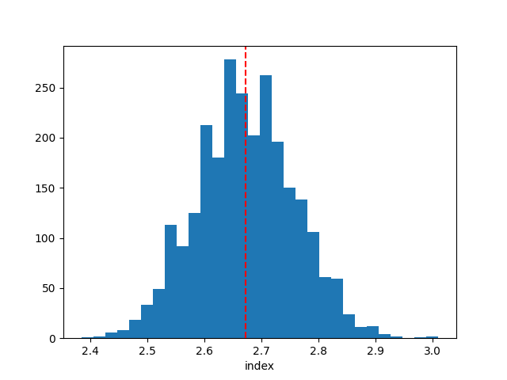
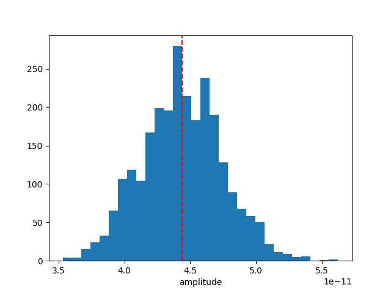
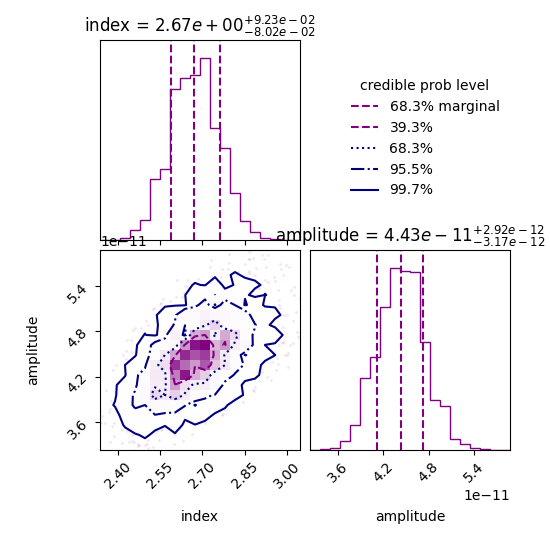
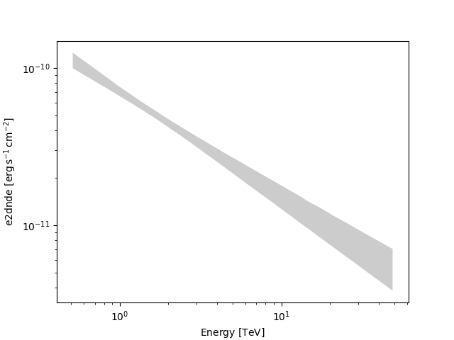
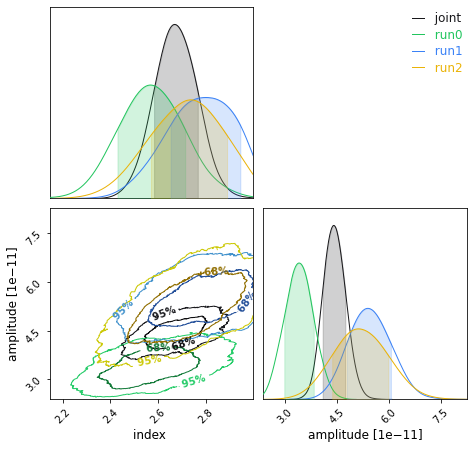
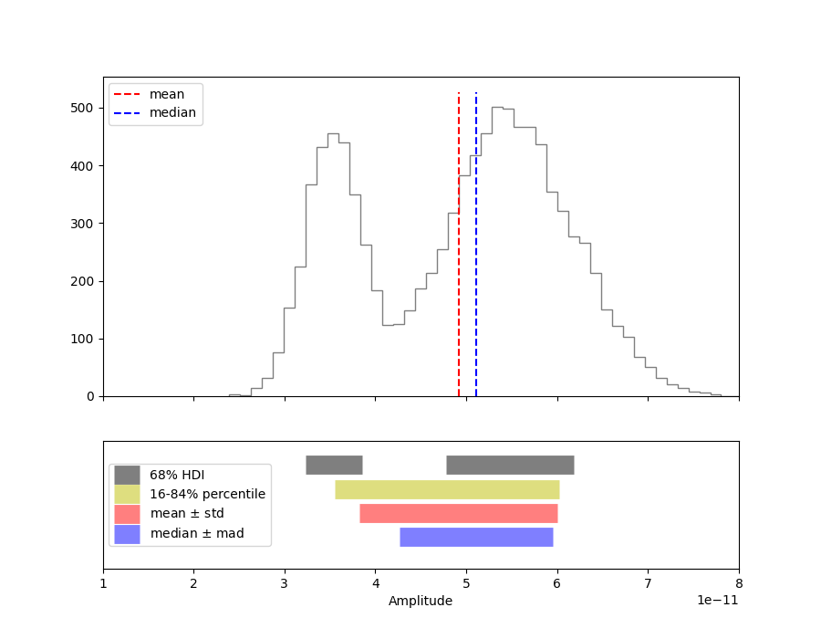

Note
Go to the end to download the full example code or to run this example in your browser via Binder.
Bayesian analysis with nested sampling#
A demonstration of a Bayesian analysis using the nested sampling technique.
Context#
1. Bayesian analysis#
Bayesian inference uses prior knowledge, in the form of a prior distribution, in order to estimate posterior probabilities which we traditionally visualise in the form of corner plots. These distributions contain more information than a maximum likelihood fit as they reveal not only the “best model” but provide a more accurate representation of errors and correlation between parameters. In particular, non-Gaussian degeneracies are complex to estimate with a maximum likelihood approach.
2. Limitations of the Markov Chain Monte Carlo approach#
A well-known approach to estimate this posterior distribution is the Markov Chain Monte Carlo (MCMC). This uses an ensemble of walkers to produce a chain of samples that after a convergence period will reach a stationary state. Once convergence is reached, the successive elements of the chain are samples of the target posterior distribution. However, the weakness of the MCMC approach lies in the “Once convergence” part. If the walkers are started far from the best likelihood region, the convergence time can be long or never reached if the walkers fall in a local minima. The choice of the initialisation point can become critical for complex models with a high number of dimensions and the ability of these walkers to escape a local minimum or to accurately describe a complex likelihood space is not guaranteed.
3. Nested sampling approach#
To overcome these issues, the nested sampling (NS) algorithm has gained traction in physics and astronomy. It is a Monte Carlo algorithm for computing an integral of the likelihood function over the prior model parameter space introduced in Skilling, 2004. The method performs this integral by evolving a collection of points through the parameter space (see recent reviews from Ashton et al., 2022, and Buchner, 2023). Without going into too many details, one important specificity of the NS method is that it starts from the entire parameter space and evolves a collection of live points to map all minima (including multiple modes if any), whereas Markov Chain Monte Carlo methods require an initialisation point and the walkers will explore the local likelihood. The ability of these walkers to escape a local minimum or to accurately describe a complex likelihood space is not guaranteed. This is a fundamental difference with MCMC or Minuit which will only ever probe the vicinity along their minimisation paths and do not have an overview of the global likelihood landscape. The analysis using the NS framework is more CPU time consuming than a standard classical fit, but it provides the full posterior distribution for all parameters, which is out of reach with traditional fitting techniques (N*(N-1)/2 contour plots to generate). In addition, it is more robust to the choice of initialisation, requires less human intervention and is therefore readily integrated in pipeline analysis. In Gammapy, we used the NS implementation of the UltraNest package (see here for more information), one of the leading package in Astronomy (already used in Cosmology and in X-rays). For a nice visualisation of the NS method see here : sampling visualisation. And for a tutorial of UltraNest applied to X-ray fitting with concrete examples and questions see : BXA Tutorial.
Note: please cite UltraNest if used for a paper
If you are using the “UltraNest” library for a paper, please follow its citation scheme: Cite UltraNest.
Proposed approach#
In this example, we will perform a Bayesian analysis with multiple 1D spectra of the Crab nebula data and investigate their posterior distributions.
Setup#
As usual, we’ll start with some setup …
import matplotlib.pyplot as plt
import numpy as np
import astropy.units as u
from gammapy.datasets import Datasets
from gammapy.datasets import SpectrumDatasetOnOff
from gammapy.modeling.models import (
SkyModel,
UniformPrior,
LogUniformPrior,
)
from gammapy.modeling.sampler import Sampler
Loading the spectral datasets#
Here we will load a few Crab 1D spectral data for which we will do a fit.
Model definition#
Now we want to define the spectral model that will be fitted to the data. The Crab spectra will be fitted here with a simple powerlaw for simplicity.
model = SkyModel.create(spectral_model="pl", name="crab")
Warning
Priors definition: Unlike a traditional fit where priors on the parameters are optional, here it is inherent to the Bayesian approach and are therefore mandatory.
In this case we will set (min,max) prior that will define the
boundaries in which the sampling will be performed.
Note that it is usually recommended to use a LogUniformPrior for
the parameters that have a large amplitude range like the
amplitude parameter.
A UniformPrior means that the samples will be drawn with uniform
probability between the (min,max) values in the linear or log space
in the case of a LogUniformPrior.
model.spectral_model.amplitude.prior = LogUniformPrior(min=1e-12, max=1e-10)
model.spectral_model.index.prior = UniformPrior(min=1, max=5)
datasets.models = [model]
print(datasets.models)
DatasetModels
Component 0: SkyModel
Name : crab
Datasets names : None
Spectral model type : PowerLawSpectralModel
Spatial model type :
Temporal model type :
Parameters:
index : 2.000 +/- 0.00
amplitude : 1.00e-12 +/- 0.0e+00 1 / (TeV s cm2)
reference (frozen): 1.000 TeV
Defining the sampler and options#
As for the Fit object, the Sampler object can receive
different backend (although just one is available for now).
The Sampler comes with “reasonable” default parameters, but you can
change them via the sampler_opts dictionary.
Here is a short description of the most relevant parameters that you
could change :
live_points: minimum number of live points throughout the run. More points allow to discover multiple peaks if existing, but is slower. To test the Prior boundaries and for debugging, a lower number (~100) can be used before a production run with more points (~400 or more).frac_remain: the cut-off condition for the integration, set by the maximum allowed fraction of posterior mass left in the live points vs the dead points. High values (e.g., 0.5) are faster and can be used if the posterior distribution is a relatively simple shape. A low value (1e-1, 1e-2) is optimal for finding peaks, but slower.log_dir: directory where the output files will be stored. If set to None, no files will be written. If set to a string, a directory will be created containing the ongoing status of the run and final results. For time consuming analysis, it is highly recommended to use that option to monitor the run and restart it in case of a crash (withresume=True).
Important note: unlike the MCMC method, you don’t need to define the number of steps for which the sampler will run. The algorithm will automatically stop once a convergence criteria has been reached.
sampler_opts = {
"live_points": 300,
"frac_remain": 0.3,
"log_dir": None,
}
sampler = Sampler(backend="ultranest", sampler_opts=sampler_opts)
Next we can run the sampler on a given dataset. No options are accepted in the run method.
[ultranest] Sampling 300 live points from prior ...
Mono-modal Volume: ~exp(-4.26) * Expected Volume: exp(0.00) Quality: ok
index : +1.0|************************************************| +5.0
amplitude: +1.0e-12|*************************** ** ********* *** ***| +1.0e-10
Z=-inf(0.00%) | Like=-4116.21..-58.92 [-4116.2122..-327.4903] | it/evals=0/301 eff=0.0000% N=300
Z=-551.6(0.00%) | Like=-545.35..-58.92 [-4116.2122..-327.4903] | it/evals=22/323 eff=95.6522% N=300
Z=-542.9(0.00%) | Like=-537.00..-58.92 [-4116.2122..-327.4903] | it/evals=30/331 eff=96.7742% N=300
Z=-515.7(0.00%) | Like=-509.12..-58.92 [-4116.2122..-327.4903] | it/evals=50/353 eff=94.3396% N=300
Z=-503.9(0.00%) | Like=-497.78..-58.92 [-4116.2122..-327.4903] | it/evals=60/364 eff=93.7500% N=300
Mono-modal Volume: ~exp(-4.26) Expected Volume: exp(-0.22) Quality: ok
index : +1.0|****************************** *****************| +5.0
amplitude: +1.0e-12|**************************** * **** **********| +1.0e-10
Z=-478.8(0.00%) | Like=-473.88..-58.92 [-4116.2122..-327.4903] | it/evals=77/384 eff=91.6667% N=300
Z=-464.2(0.00%) | Like=-457.48..-58.92 [-4116.2122..-327.4903] | it/evals=90/398 eff=91.8367% N=300
Z=-442.0(0.00%) | Like=-436.54..-58.92 [-4116.2122..-327.4903] | it/evals=107/420 eff=89.1667% N=300
Z=-421.3(0.00%) | Like=-415.54..-58.92 [-4116.2122..-327.4903] | it/evals=120/437 eff=87.5912% N=300
Mono-modal Volume: ~exp(-4.57) * Expected Volume: exp(-0.45) Quality: ok
index : +1.0|****************************** *****************| +5.0
amplitude: +1.0e-12|****************************** ****************| +1.0e-10
Z=-405.3(0.00%) | Like=-398.14..-58.92 [-4116.2122..-327.4903] | it/evals=134/454 eff=87.0130% N=300
Z=-390.4(0.00%) | Like=-383.71..-58.92 [-4116.2122..-327.4903] | it/evals=150/473 eff=86.7052% N=300
Z=-369.3(0.00%) | Like=-363.07..-58.92 [-4116.2122..-327.4903] | it/evals=168/495 eff=86.1538% N=300
Z=-353.0(0.00%) | Like=-345.32..-58.92 [-4116.2122..-327.4903] | it/evals=180/508 eff=86.5385% N=300
Z=-335.3(0.00%) | Like=-328.80..-58.92 [-4116.2122..-327.4903] | it/evals=200/530 eff=86.9565% N=300
Mono-modal Volume: ~exp(-4.69) * Expected Volume: exp(-0.67) Quality: ok
index : +1.0| **********************************************| +5.0
amplitude: +1.0e-12| ***********************************************| +1.0e-10
Z=-334.6(0.00%) | Like=-328.48..-58.92 [-4116.2122..-327.4903] | it/evals=201/531 eff=87.0130% N=300
Z=-328.2(0.00%) | Like=-319.86..-58.92 [-326.3710..-189.9857] | it/evals=210/542 eff=86.7769% N=300
Z=-310.8(0.00%) | Like=-304.53..-58.92 [-326.3710..-189.9857] | it/evals=228/565 eff=86.0377% N=300
Z=-299.9(0.00%) | Like=-293.59..-58.84 [-326.3710..-189.9857] | it/evals=240/578 eff=86.3309% N=300
Z=-287.5(0.00%) | Like=-280.68..-58.84 [-326.3710..-189.9857] | it/evals=257/600 eff=85.6667% N=300
Mono-modal Volume: ~exp(-5.15) * Expected Volume: exp(-0.89) Quality: ok
index : +1.0| ********************************************| +5.0
amplitude: +1.0e-12| ****************************************** ***| +1.0e-10
Z=-277.8(0.00%) | Like=-270.99..-58.84 [-326.3710..-189.9857] | it/evals=268/614 eff=85.3503% N=300
Z=-276.2(0.00%) | Like=-267.19..-58.84 [-326.3710..-189.9857] | it/evals=270/616 eff=85.4430% N=300
Z=-257.9(0.00%) | Like=-251.90..-58.84 [-326.3710..-189.9857] | it/evals=290/638 eff=85.7988% N=300
Z=-252.2(0.00%) | Like=-246.24..-58.84 [-326.3710..-189.9857] | it/evals=300/653 eff=84.9858% N=300
Z=-238.6(0.00%) | Like=-232.37..-58.84 [-326.3710..-189.9857] | it/evals=320/675 eff=85.3333% N=300
Z=-233.6(0.00%) | Like=-226.18..-58.84 [-326.3710..-189.9857] | it/evals=330/685 eff=85.7143% N=300
Mono-modal Volume: ~exp(-5.15) Expected Volume: exp(-1.12) Quality: ok
index : +1.0| ******************************************| +5.0
amplitude: +1.0e-12| ***************************************** ***| +1.0e-10
Z=-220.2(0.00%) | Like=-212.22..-58.84 [-326.3710..-189.9857] | it/evals=346/705 eff=85.4321% N=300
Z=-212.0(0.00%) | Like=-205.50..-58.84 [-326.3710..-189.9857] | it/evals=360/724 eff=84.9057% N=300
Z=-204.1(0.00%) | Like=-197.59..-58.84 [-326.3710..-189.9857] | it/evals=374/747 eff=83.6689% N=300
Z=-198.5(0.00%) | Like=-192.52..-58.84 [-326.3710..-189.9857] | it/evals=390/769 eff=83.1557% N=300
Mono-modal Volume: ~exp(-5.43) * Expected Volume: exp(-1.34) Quality: ok
index : +1.0| **************************************** | +5.0
amplitude: +1.0e-12| *********************************** **** ***| +1.0e-10
Z=-195.1(0.00%) | Like=-189.34..-58.84 [-189.9720..-134.6956] | it/evals=402/783 eff=83.2298% N=300
Z=-190.1(0.00%) | Like=-184.32..-58.84 [-189.9720..-134.6956] | it/evals=415/804 eff=82.3413% N=300
Z=-188.7(0.00%) | Like=-183.12..-58.84 [-189.9720..-134.6956] | it/evals=420/810 eff=82.3529% N=300
Z=-184.5(0.00%) | Like=-178.49..-58.84 [-189.9720..-134.6956] | it/evals=437/835 eff=81.6822% N=300
Z=-180.6(0.00%) | Like=-173.99..-58.84 [-189.9720..-134.6956] | it/evals=450/852 eff=81.5217% N=300
Z=-176.1(0.00%) | Like=-170.44..-58.84 [-189.9720..-134.6956] | it/evals=464/874 eff=80.8362% N=300
Mono-modal Volume: ~exp(-5.76) * Expected Volume: exp(-1.56) Quality: ok
index : +1.0| ************************************ | +5.0
amplitude: +1.0e-12| ************************************ ** ***| +1.0e-10
Z=-174.9(0.00%) | Like=-168.77..-58.84 [-189.9720..-134.6956] | it/evals=469/882 eff=80.5842% N=300
Z=-171.8(0.00%) | Like=-165.45..-58.84 [-189.9720..-134.6956] | it/evals=480/896 eff=80.5369% N=300
Z=-165.8(0.00%) | Like=-159.59..-58.84 [-189.9720..-134.6956] | it/evals=499/918 eff=80.7443% N=300
Z=-162.9(0.00%) | Like=-156.58..-58.84 [-189.9720..-134.6956] | it/evals=510/929 eff=81.0811% N=300
Z=-160.0(0.00%) | Like=-153.69..-58.84 [-189.9720..-134.6956] | it/evals=525/954 eff=80.2752% N=300
Mono-modal Volume: ~exp(-5.76) Expected Volume: exp(-1.79) Quality: ok
index : +1.0| ******************************* | +5.0
amplitude: +1.0e-12| *********************************** ** * | +1.0e-10
Z=-154.2(0.00%) | Like=-147.96..-58.84 [-189.9720..-134.6956] | it/evals=540/974 eff=80.1187% N=300
Z=-151.5(0.00%) | Like=-145.98..-58.84 [-189.9720..-134.6956] | it/evals=555/996 eff=79.7414% N=300
Z=-149.4(0.00%) | Like=-143.72..-58.84 [-189.9720..-134.6956] | it/evals=570/1015 eff=79.7203% N=300
Z=-146.2(0.00%) | Like=-140.34..-58.84 [-189.9720..-134.6956] | it/evals=585/1037 eff=79.3758% N=300
Z=-143.3(0.00%) | Like=-137.15..-58.84 [-189.9720..-134.6956] | it/evals=600/1059 eff=79.0514% N=300
Mono-modal Volume: ~exp(-5.94) * Expected Volume: exp(-2.01) Quality: ok
index : +1.0| ***************************** +4.1 | +5.0
amplitude: +1.0e-12| ************************************* | +1.0e-10
Z=-142.7(0.00%) | Like=-136.32..-58.84 [-189.9720..-134.6956] | it/evals=603/1063 eff=79.0301% N=300
Z=-139.1(0.00%) | Like=-133.11..-58.84 [-134.6826..-98.0350] | it/evals=621/1086 eff=79.0076% N=300
Z=-137.8(0.00%) | Like=-131.72..-58.84 [-134.6826..-98.0350] | it/evals=630/1100 eff=78.7500% N=300
Z=-133.4(0.00%) | Like=-126.70..-58.84 [-134.6826..-98.0350] | it/evals=646/1122 eff=78.5888% N=300
Z=-130.4(0.00%) | Like=-123.42..-58.84 [-134.6826..-98.0350] | it/evals=660/1145 eff=78.1065% N=300
Mono-modal Volume: ~exp(-5.94) Expected Volume: exp(-2.23) Quality: ok
index : +1.0| +1.9 ************************ +3.9 | +5.0
amplitude: +1.0e-12| ********************************* | +1.0e-10
Z=-126.8(0.00%) | Like=-120.65..-58.84 [-134.6826..-98.0350] | it/evals=676/1165 eff=78.1503% N=300
Z=-124.5(0.00%) | Like=-118.34..-58.84 [-134.6826..-98.0350] | it/evals=689/1187 eff=77.6776% N=300
Z=-124.3(0.00%) | Like=-118.23..-58.84 [-134.6826..-98.0350] | it/evals=690/1189 eff=77.6153% N=300
Z=-121.2(0.00%) | Like=-114.85..-58.84 [-134.6826..-98.0350] | it/evals=704/1212 eff=77.1930% N=300
Z=-119.0(0.00%) | Like=-112.92..-58.84 [-134.6826..-98.0350] | it/evals=717/1237 eff=76.5208% N=300
Z=-118.6(0.00%) | Like=-112.81..-58.84 [-134.6826..-98.0350] | it/evals=720/1241 eff=76.5143% N=300
Z=-116.1(0.00%) | Like=-109.71..-58.80 [-134.6826..-98.0350] | it/evals=736/1263 eff=76.4278% N=300
Mono-modal Volume: ~exp(-6.07) * Expected Volume: exp(-2.46) Quality: ok
index : +1.0| +2.0 ********************** +3.7 | +5.0
amplitude: +1.0e-12| ***************************** +7.9e-11| +1.0e-10
Z=-115.9(0.00%) | Like=-109.38..-58.80 [-134.6826..-98.0350] | it/evals=737/1264 eff=76.4523% N=300
Z=-114.4(0.00%) | Like=-108.54..-58.80 [-134.6826..-98.0350] | it/evals=750/1280 eff=76.5306% N=300
Z=-111.5(0.00%) | Like=-104.55..-58.80 [-134.6826..-98.0350] | it/evals=766/1302 eff=76.4471% N=300
Z=-109.1(0.00%) | Like=-102.75..-58.80 [-134.6826..-98.0350] | it/evals=780/1322 eff=76.3209% N=300
Z=-107.4(0.00%) | Like=-101.25..-58.80 [-134.6826..-98.0350] | it/evals=793/1346 eff=75.8126% N=300
Mono-modal Volume: ~exp(-6.56) * Expected Volume: exp(-2.68) Quality: ok
index : +1.0| +2.0 ******************** +3.6 | +5.0
amplitude: +1.0e-12| *************************** +7.5e-11 | +1.0e-10
Z=-105.8(0.00%) | Like=-99.46..-58.80 [-134.6826..-98.0350] | it/evals=804/1362 eff=75.7062% N=300
Z=-105.0(0.00%) | Like=-98.44..-58.80 [-134.6826..-98.0350] | it/evals=810/1372 eff=75.5597% N=300
Z=-103.3(0.00%) | Like=-97.28..-58.80 [-97.8656..-80.7825] | it/evals=826/1394 eff=75.5027% N=300
Z=-102.1(0.00%) | Like=-95.74..-58.80 [-97.8656..-80.7825] | it/evals=840/1415 eff=75.3363% N=300
Z=-100.5(0.00%) | Like=-94.07..-58.80 [-97.8656..-80.7825] | it/evals=856/1437 eff=75.2858% N=300
Z=-99.1(0.00%) | Like=-92.88..-58.80 [-97.8656..-80.7825] | it/evals=870/1461 eff=74.9354% N=300
Mono-modal Volume: ~exp(-6.81) * Expected Volume: exp(-2.90) Quality: ok
index : +1.0| +2.1 ***************** +3.5 | +5.0
amplitude: +1.0e-12| +2.5e-11 ************************* +7.4e-11 | +1.0e-10
Z=-99.0(0.00%) | Like=-92.86..-58.80 [-97.8656..-80.7825] | it/evals=871/1463 eff=74.8925% N=300
Z=-97.2(0.00%) | Like=-90.83..-58.80 [-97.8656..-80.7825] | it/evals=890/1486 eff=75.0422% N=300
Z=-96.1(0.00%) | Like=-89.45..-58.80 [-97.8656..-80.7825] | it/evals=900/1502 eff=74.8752% N=300
Z=-94.5(0.00%) | Like=-87.97..-58.77 [-97.8656..-80.7825] | it/evals=917/1524 eff=74.9183% N=300
Z=-93.2(0.00%) | Like=-86.60..-58.77 [-97.8656..-80.7825] | it/evals=930/1542 eff=74.8792% N=300
Mono-modal Volume: ~exp(-7.10) * Expected Volume: exp(-3.13) Quality: ok
index : +1.0| +2.2 *************** +3.4 | +5.0
amplitude: +1.0e-12| +2.6e-11 *********************** +6.9e-11 | +1.0e-10
Z=-92.2(0.00%) | Like=-85.60..-58.77 [-97.8656..-80.7825] | it/evals=938/1551 eff=74.9800% N=300
Z=-90.6(0.00%) | Like=-84.27..-58.77 [-97.8656..-80.7825] | it/evals=955/1573 eff=75.0196% N=300
Z=-90.3(0.00%) | Like=-84.07..-58.77 [-97.8656..-80.7825] | it/evals=960/1578 eff=75.1174% N=300
Z=-89.3(0.00%) | Like=-83.16..-58.77 [-97.8656..-80.7825] | it/evals=975/1600 eff=75.0000% N=300
Z=-88.3(0.00%) | Like=-82.10..-58.77 [-97.8656..-80.7825] | it/evals=990/1622 eff=74.8865% N=300
Mono-modal Volume: ~exp(-7.10) Expected Volume: exp(-3.35) Quality: ok
index : +1.0| +2.2 ************** +3.3 | +5.0
amplitude: +1.0e-12| +2.7e-11 ********************* +6.7e-11 | +1.0e-10
Z=-87.1(0.00%) | Like=-80.66..-58.77 [-80.7503..-70.7297] | it/evals=1008/1642 eff=75.1118% N=300
Z=-86.3(0.00%) | Like=-79.95..-58.77 [-80.7503..-70.7297] | it/evals=1020/1660 eff=75.0000% N=300
Z=-85.4(0.00%) | Like=-79.09..-58.77 [-80.7503..-70.7297] | it/evals=1035/1682 eff=74.8915% N=300
Z=-84.4(0.00%) | Like=-77.69..-58.77 [-80.7503..-70.7297] | it/evals=1050/1704 eff=74.7863% N=300
Z=-83.2(0.00%) | Like=-76.76..-58.77 [-80.7503..-70.7297] | it/evals=1067/1726 eff=74.8247% N=300
Mono-modal Volume: ~exp(-7.54) * Expected Volume: exp(-3.57) Quality: ok
index : +1.0| +2.2 ************* +3.2 | +5.0
amplitude: +1.0e-12| +2.9e-11 ****************** +6.4e-11 | +1.0e-10
Z=-82.9(0.00%) | Like=-76.45..-58.77 [-80.7503..-70.7297] | it/evals=1072/1735 eff=74.7038% N=300
Z=-82.4(0.00%) | Like=-76.19..-58.77 [-80.7503..-70.7297] | it/evals=1080/1745 eff=74.7405% N=300
Z=-81.8(0.00%) | Like=-75.28..-58.77 [-80.7503..-70.7297] | it/evals=1096/1768 eff=74.6594% N=300
Z=-81.0(0.00%) | Like=-74.64..-58.77 [-80.7503..-70.7297] | it/evals=1110/1784 eff=74.7978% N=300
Z=-80.3(0.00%) | Like=-74.08..-58.77 [-80.7503..-70.7297] | it/evals=1127/1806 eff=74.8340% N=300
Mono-modal Volume: ~exp(-7.54) Expected Volume: exp(-3.80) Quality: ok
index : +1.0| +2.3 *********** +3.2 | +5.0
amplitude: +1.0e-12| +3.0e-11 **************** +6.3e-11 | +1.0e-10
Z=-79.8(0.00%) | Like=-73.51..-58.77 [-80.7503..-70.7297] | it/evals=1140/1821 eff=74.9507% N=300
Z=-79.3(0.00%) | Like=-73.15..-58.77 [-80.7503..-70.7297] | it/evals=1153/1843 eff=74.7246% N=300
Z=-78.7(0.00%) | Like=-72.29..-58.77 [-80.7503..-70.7297] | it/evals=1168/1865 eff=74.6326% N=300
Z=-78.6(0.00%) | Like=-72.23..-58.77 [-80.7503..-70.7297] | it/evals=1170/1870 eff=74.5223% N=300
Z=-78.1(0.00%) | Like=-71.81..-58.77 [-80.7503..-70.7297] | it/evals=1183/1892 eff=74.3090% N=300
Z=-77.6(0.00%) | Like=-71.14..-58.77 [-80.7503..-70.7297] | it/evals=1199/1914 eff=74.2875% N=300
Z=-77.5(0.00%) | Like=-71.12..-58.77 [-80.7503..-70.7297] | it/evals=1200/1915 eff=74.3034% N=300
Mono-modal Volume: ~exp(-8.01) * Expected Volume: exp(-4.02) Quality: ok
index : +1.0| +2.3 *********** +3.1 | +5.0
amplitude: +1.0e-12| +3.1e-11 *************** +6.1e-11 | +1.0e-10
Z=-77.3(0.00%) | Like=-70.83..-58.77 [-80.7503..-70.7297] | it/evals=1206/1923 eff=74.3068% N=300
Z=-76.7(0.00%) | Like=-70.45..-58.77 [-70.7175..-65.7791] | it/evals=1224/1945 eff=74.4073% N=300
Z=-76.6(0.00%) | Like=-70.32..-58.77 [-70.7175..-65.7791] | it/evals=1230/1952 eff=74.4552% N=300
Z=-76.0(0.00%) | Like=-69.58..-58.77 [-70.7175..-65.7791] | it/evals=1251/1975 eff=74.6866% N=300
Z=-75.7(0.00%) | Like=-69.39..-58.77 [-70.7175..-65.7791] | it/evals=1260/1987 eff=74.6888% N=300
Mono-modal Volume: ~exp(-8.10) * Expected Volume: exp(-4.24) Quality: ok
index : +1.0| +2.3 ********** +3.0 | +5.0
amplitude: +1.0e-12| +3.2e-11 ************** +5.9e-11 | +1.0e-10
Z=-75.3(0.00%) | Like=-69.02..-58.77 [-70.7175..-65.7791] | it/evals=1273/2008 eff=74.5316% N=300
Z=-74.9(0.01%) | Like=-68.71..-58.77 [-70.7175..-65.7791] | it/evals=1290/2029 eff=74.6096% N=300
Z=-74.6(0.01%) | Like=-68.29..-58.77 [-70.7175..-65.7791] | it/evals=1306/2051 eff=74.5860% N=300
Z=-74.3(0.01%) | Like=-67.98..-58.77 [-70.7175..-65.7791] | it/evals=1319/2073 eff=74.3937% N=300
Z=-74.2(0.01%) | Like=-67.93..-58.77 [-70.7175..-65.7791] | it/evals=1320/2074 eff=74.4081% N=300
Z=-73.8(0.02%) | Like=-67.30..-58.77 [-70.7175..-65.7791] | it/evals=1337/2096 eff=74.4432% N=300
Mono-modal Volume: ~exp(-8.24) * Expected Volume: exp(-4.47) Quality: ok
index : +1.0| +2.4 ********* +3.0 | +5.0
amplitude: +1.0e-12| +3.3e-11 ************* +5.8e-11 | +1.0e-10
Z=-73.7(0.02%) | Like=-67.17..-58.77 [-70.7175..-65.7791] | it/evals=1340/2100 eff=74.4444% N=300
Z=-73.5(0.03%) | Like=-66.98..-58.76 [-70.7175..-65.7791] | it/evals=1350/2114 eff=74.4212% N=300
Z=-73.1(0.04%) | Like=-66.69..-58.76 [-70.7175..-65.7791] | it/evals=1365/2136 eff=74.3464% N=300
Z=-72.8(0.06%) | Like=-66.31..-58.76 [-70.7175..-65.7791] | it/evals=1380/2154 eff=74.4337% N=300
Z=-72.4(0.08%) | Like=-65.80..-58.76 [-70.7175..-65.7791] | it/evals=1396/2176 eff=74.4136% N=300
Mono-modal Volume: ~exp(-8.61) * Expected Volume: exp(-4.69) Quality: ok
index : +1.0| +2.4 ******** +3.0 | +5.0
amplitude: +1.0e-12| +3.4e-11 *********** +5.6e-11 | +1.0e-10
Z=-72.2(0.10%) | Like=-65.47..-58.76 [-65.7023..-65.1479] | it/evals=1407/2189 eff=74.4839% N=300
Z=-72.1(0.11%) | Like=-65.46..-58.76 [-65.7023..-65.1479] | it/evals=1410/2192 eff=74.5243% N=300
Z=-71.8(0.16%) | Like=-65.10..-58.76 [-65.1459..-65.0834] | it/evals=1425/2214 eff=74.4514% N=300
Z=-71.4(0.22%) | Like=-64.71..-58.76 [-64.7505..-64.7086] | it/evals=1440/2229 eff=74.6501% N=300
Z=-71.1(0.31%) | Like=-64.46..-58.76 [-64.4790..-64.4643] | it/evals=1456/2252 eff=74.5902% N=300
Z=-70.8(0.41%) | Like=-64.25..-58.76 [-64.2493..-64.2489]*| it/evals=1470/2273 eff=74.5058% N=300
Mono-modal Volume: ~exp(-8.61) Expected Volume: exp(-4.91) Quality: ok
index : +1.0| +2.4 ******** +3.0 | +5.0
amplitude: +1.0e-12| +3.5e-11 ********** +5.5e-11 | +1.0e-10
Z=-70.7(0.49%) | Like=-64.06..-58.76 [-64.0813..-64.0553] | it/evals=1480/2293 eff=74.2599% N=300
Z=-70.4(0.65%) | Like=-63.74..-58.76 [-63.7409..-63.7289] | it/evals=1497/2314 eff=74.3297% N=300
Z=-70.3(0.69%) | Like=-63.72..-58.76 [-63.7198..-63.7180]*| it/evals=1500/2318 eff=74.3310% N=300
Z=-70.1(0.86%) | Like=-63.45..-58.76 [-63.4629..-63.4509] | it/evals=1515/2340 eff=74.2647% N=300
Z=-69.9(1.06%) | Like=-63.28..-58.76 [-63.3116..-63.2793] | it/evals=1529/2362 eff=74.1513% N=300
Z=-69.8(1.07%) | Like=-63.27..-58.76 [-63.2727..-63.2553] | it/evals=1530/2367 eff=74.0203% N=300
Mono-modal Volume: ~exp(-8.61) Expected Volume: exp(-5.14) Quality: ok
index : +1.0| +2.4 ******* +2.9 | +5.0
amplitude: +1.0e-12| +3.7e-11 ********* +5.3e-11 | +1.0e-10
Z=-69.6(1.36%) | Like=-63.01..-58.76 [-63.0138..-63.0011] | it/evals=1546/2387 eff=74.0776% N=300
Z=-69.4(1.65%) | Like=-62.83..-58.76 [-62.8345..-62.8259]*| it/evals=1560/2409 eff=73.9687% N=300
Z=-69.2(2.03%) | Like=-62.69..-58.76 [-62.6863..-62.6730] | it/evals=1576/2431 eff=73.9559% N=300
Z=-69.1(2.32%) | Like=-62.48..-58.76 [-62.5112..-62.4761] | it/evals=1587/2453 eff=73.7111% N=300
Z=-69.1(2.40%) | Like=-62.43..-58.76 [-62.4550..-62.4324] | it/evals=1590/2456 eff=73.7477% N=300
Z=-68.9(2.78%) | Like=-62.34..-58.76 [-62.3392..-62.3368]*| it/evals=1602/2480 eff=73.4862% N=300
Mono-modal Volume: ~exp(-9.35) * Expected Volume: exp(-5.36) Quality: ok
index : +1.0| +2.5 ****** +2.9 | +5.0
amplitude: +1.0e-12| +3.7e-11 ********* +5.3e-11 | +1.0e-10
Z=-68.8(3.00%) | Like=-62.31..-58.76 [-62.3231..-62.3098] | it/evals=1608/2487 eff=73.5254% N=300
Z=-68.7(3.37%) | Like=-62.19..-58.75 [-62.1887..-62.1746] | it/evals=1620/2501 eff=73.6029% N=300
Z=-68.5(4.22%) | Like=-61.89..-58.75 [-61.8865..-61.8827]*| it/evals=1642/2523 eff=73.8641% N=300
Z=-68.4(4.62%) | Like=-61.80..-58.75 [-61.8271..-61.8034] | it/evals=1650/2533 eff=73.8916% N=300
Z=-68.2(5.59%) | Like=-61.53..-58.75 [-61.5257..-61.5121] | it/evals=1669/2556 eff=73.9805% N=300
Mono-modal Volume: ~exp(-9.50) * Expected Volume: exp(-5.58) Quality: ok
index : +1.0| +2.5 ****** +2.9 | +5.0
amplitude: +1.0e-12| +3.8e-11 ******** +5.2e-11 | +1.0e-10
Z=-68.2(5.92%) | Like=-61.50..-58.75 [-61.4955..-61.4946]*| it/evals=1675/2565 eff=73.9514% N=300
Z=-68.1(6.22%) | Like=-61.47..-58.75 [-61.4797..-61.4657] | it/evals=1680/2573 eff=73.9111% N=300
Z=-67.9(7.33%) | Like=-61.32..-58.75 [-61.3230..-61.3152]*| it/evals=1698/2595 eff=73.9869% N=300
Z=-67.8(8.20%) | Like=-61.22..-58.75 [-61.2191..-61.2112]*| it/evals=1710/2614 eff=73.8980% N=300
Z=-67.7(9.23%) | Like=-61.12..-58.75 [-61.1234..-61.1036] | it/evals=1724/2636 eff=73.8014% N=300
Z=-67.6(10.38%) | Like=-60.96..-58.75 [-60.9646..-60.9375] | it/evals=1740/2658 eff=73.7913% N=300
Mono-modal Volume: ~exp(-9.64) * Expected Volume: exp(-5.81) Quality: ok
index : +1.0| +2.5 ****** +2.8 | +5.0
amplitude: +1.0e-12| +3.8e-11 ******* +5.1e-11 | +1.0e-10
Z=-67.6(10.54%) | Like=-60.93..-58.75 [-60.9296..-60.9283]*| it/evals=1742/2660 eff=73.8136% N=300
Z=-67.5(11.78%) | Like=-60.81..-58.75 [-60.8136..-60.8105]*| it/evals=1758/2683 eff=73.7726% N=300
Z=-67.4(12.89%) | Like=-60.72..-58.75 [-60.7215..-60.7058] | it/evals=1770/2699 eff=73.7807% N=300
Z=-67.3(14.48%) | Like=-60.63..-58.75 [-60.6322..-60.6316]*| it/evals=1785/2721 eff=73.7299% N=300
Z=-67.2(15.88%) | Like=-60.57..-58.75 [-60.5712..-60.5710]*| it/evals=1799/2743 eff=73.6390% N=300
Z=-67.2(15.99%) | Like=-60.57..-58.75 [-60.5710..-60.5697]*| it/evals=1800/2744 eff=73.6498% N=300
Mono-modal Volume: ~exp(-9.97) * Expected Volume: exp(-6.03) Quality: ok
index : +1.0| +2.5 **** +2.8 | +5.0
amplitude: +1.0e-12| +3.9e-11 ****** +5.0e-11 | +1.0e-10
Z=-67.1(16.97%) | Like=-60.52..-58.75 [-60.5181..-60.5172]*| it/evals=1809/2754 eff=73.7164% N=300
Z=-67.0(18.78%) | Like=-60.41..-58.75 [-60.4146..-60.4107]*| it/evals=1827/2775 eff=73.8182% N=300
Z=-67.0(19.14%) | Like=-60.40..-58.75 [-60.4016..-60.3997]*| it/evals=1830/2778 eff=73.8499% N=300
Z=-66.9(21.13%) | Like=-60.34..-58.75 [-60.3405..-60.3404]*| it/evals=1848/2800 eff=73.9200% N=300
Z=-66.9(22.39%) | Like=-60.28..-58.75 [-60.2785..-60.2688]*| it/evals=1860/2813 eff=74.0151% N=300
Z=-66.8(23.85%) | Like=-60.22..-58.75 [-60.2191..-60.2075] | it/evals=1873/2835 eff=73.8856% N=300
Mono-modal Volume: ~exp(-10.17) * Expected Volume: exp(-6.25) Quality: ok
index : +1.0| +2.5 **** +2.8 | +5.0
amplitude: +1.0e-12| +3.9e-11 ****** +5.0e-11 | +1.0e-10
Z=-66.8(24.11%) | Like=-60.20..-58.75 [-60.1988..-60.1917]*| it/evals=1876/2839 eff=73.8874% N=300
Z=-66.7(25.67%) | Like=-60.10..-58.75 [-60.1004..-60.0981]*| it/evals=1890/2857 eff=73.9147% N=300
Z=-66.6(27.86%) | Like=-60.03..-58.75 [-60.0345..-60.0328]*| it/evals=1908/2880 eff=73.9535% N=300
Z=-66.6(29.28%) | Like=-59.97..-58.75 [-59.9726..-59.9721]*| it/evals=1920/2896 eff=73.9599% N=300
Z=-66.5(31.09%) | Like=-59.91..-58.75 [-59.9125..-59.9080]*| it/evals=1936/2918 eff=73.9496% N=300
Mono-modal Volume: ~exp(-10.48) * Expected Volume: exp(-6.48) Quality: ok
index : +1.0| +2.5 **** +2.8 | +5.0
amplitude: +1.0e-12| +4.0e-11 ****** +4.9e-11 | +1.0e-10
Z=-66.5(31.92%) | Like=-59.89..-58.75 [-59.8891..-59.8860]*| it/evals=1943/2927 eff=73.9627% N=300
Z=-66.5(32.69%) | Like=-59.87..-58.75 [-59.8745..-59.8738]*| it/evals=1950/2934 eff=74.0319% N=300
Z=-66.4(35.10%) | Like=-59.81..-58.75 [-59.8082..-59.8020]*| it/evals=1969/2955 eff=74.1620% N=300
Z=-66.4(36.47%) | Like=-59.77..-58.75 [-59.7742..-59.7738]*| it/evals=1980/2969 eff=74.1851% N=300
Z=-66.3(38.38%) | Like=-59.72..-58.75 [-59.7223..-59.7201]*| it/evals=1996/2991 eff=74.1732% N=300
Mono-modal Volume: ~exp(-10.48) Expected Volume: exp(-6.70) Quality: ok
index : +1.0| +2.6 **** +2.8 | +5.0
amplitude: +1.0e-12| +4.0e-11 ***** +4.9e-11 | +1.0e-10
Z=-66.3(40.06%) | Like=-59.70..-58.75 [-59.6955..-59.6894]*| it/evals=2010/3009 eff=74.1971% N=300
Z=-66.2(41.61%) | Like=-59.66..-58.75 [-59.6577..-59.6520]*| it/evals=2023/3031 eff=74.0754% N=300
Z=-66.2(43.39%) | Like=-59.61..-58.75 [-59.6081..-59.6054]*| it/evals=2038/3053 eff=74.0283% N=300
Z=-66.2(43.60%) | Like=-59.60..-58.75 [-59.5990..-59.5974]*| it/evals=2040/3056 eff=74.0203% N=300
Z=-66.2(45.08%) | Like=-59.55..-58.75 [-59.5500..-59.5463]*| it/evals=2053/3078 eff=73.9021% N=300
Z=-66.1(46.60%) | Like=-59.51..-58.75 [-59.5096..-59.5069]*| it/evals=2065/3100 eff=73.7500% N=300
Z=-66.1(47.21%) | Like=-59.49..-58.75 [-59.4932..-59.4916]*| it/evals=2070/3106 eff=73.7705% N=300
Mono-modal Volume: ~exp(-10.74) * Expected Volume: exp(-6.92) Quality: ok
index : +1.0| +2.6 **** +2.8 | +5.0
amplitude: +1.0e-12| +4.1e-11 **** +4.8e-11 | +1.0e-10
Z=-66.1(48.09%) | Like=-59.48..-58.75 [-59.4769..-59.4690]*| it/evals=2077/3119 eff=73.6786% N=300
Z=-66.0(50.21%) | Like=-59.44..-58.75 [-59.4361..-59.4348]*| it/evals=2095/3141 eff=73.7416% N=300
Z=-66.0(50.82%) | Like=-59.43..-58.75 [-59.4286..-59.4212]*| it/evals=2100/3147 eff=73.7619% N=300
Z=-66.0(52.52%) | Like=-59.40..-58.75 [-59.3959..-59.3870]*| it/evals=2114/3170 eff=73.6585% N=300
Z=-66.0(54.30%) | Like=-59.36..-58.75 [-59.3561..-59.3542]*| it/evals=2130/3190 eff=73.7024% N=300
Mono-modal Volume: ~exp(-10.95) * Expected Volume: exp(-7.15) Quality: ok
index : +1.0| +2.6 **** +2.8 | +5.0
amplitude: +1.0e-12| +4.1e-11 **** +4.8e-11 | +1.0e-10
Z=-65.9(55.82%) | Like=-59.32..-58.75 [-59.3152..-59.3143]*| it/evals=2144/3210 eff=73.6770% N=300
Z=-65.9(57.22%) | Like=-59.29..-58.75 [-59.2882..-59.2869]*| it/evals=2157/3232 eff=73.5675% N=300
Z=-65.9(57.56%) | Like=-59.28..-58.75 [-59.2757..-59.2755]*| it/evals=2160/3236 eff=73.5695% N=300
Z=-65.9(58.90%) | Like=-59.26..-58.75 [-59.2621..-59.2619]*| it/evals=2173/3258 eff=73.4618% N=300
Z=-65.9(60.31%) | Like=-59.25..-58.75 [-59.2457..-59.2435]*| it/evals=2187/3280 eff=73.3893% N=300
Z=-65.9(60.60%) | Like=-59.24..-58.75 [-59.2416..-59.2366]*| it/evals=2190/3284 eff=73.3914% N=300
Z=-65.8(61.95%) | Like=-59.21..-58.75 [-59.2092..-59.2085]*| it/evals=2204/3306 eff=73.3200% N=300
Mono-modal Volume: ~exp(-11.17) * Expected Volume: exp(-7.37) Quality: ok
index : +1.0| +2.6 ** +2.7 | +5.0
amplitude: +1.0e-12| +4.2e-11 **** +4.7e-11 | +1.0e-10
Z=-65.8(62.62%) | Like=-59.20..-58.75 [-59.2017..-59.2015]*| it/evals=2211/3315 eff=73.3333% N=300
Z=-65.8(63.52%) | Like=-59.19..-58.75 [-59.1888..-59.1839]*| it/evals=2220/3326 eff=73.3642% N=300
Z=-65.8(64.99%) | Like=-59.16..-58.75 [-59.1601..-59.1589]*| it/evals=2235/3349 eff=73.3027% N=300
Z=-65.8(66.39%) | Like=-59.14..-58.75 [-59.1356..-59.1313]*| it/evals=2250/3369 eff=73.3138% N=300
Z=-65.7(67.65%) | Like=-59.11..-58.75 [-59.1141..-59.1120]*| it/evals=2264/3392 eff=73.2212% N=300
Z=-65.7(68.51%) | Like=-59.11..-58.75 [-59.1061..-59.1050]*| it/evals=2274/3414 eff=73.0250% N=300
Mono-modal Volume: ~exp(-11.58) * Expected Volume: exp(-7.59) Quality: ok
index : +1.0| +2.6 ** +2.7 | +5.0
amplitude: +1.0e-12| +4.2e-11 **** +4.7e-11 | +1.0e-10
Z=-65.7(68.87%) | Like=-59.10..-58.75 [-59.1024..-59.1008]*| it/evals=2278/3419 eff=73.0362% N=300
Z=-65.7(69.05%) | Like=-59.10..-58.75 [-59.1005..-59.1001]*| it/evals=2280/3421 eff=73.0535% N=300
[ultranest] Explored until L=-6e+01
[ultranest] Likelihood function evaluations: 3434
[ultranest] logZ = -65.34 +- 0.08496
[ultranest] Effective samples strategy satisfied (ESS = 999.5, need >400)
[ultranest] Posterior uncertainty strategy is satisfied (KL: 0.46+-0.09 nat, need <0.50 nat)
[ultranest] Evidency uncertainty strategy is satisfied (dlogz=0.28, need <0.5)
[ultranest] logZ error budget: single: 0.14 bs:0.08 tail:0.26 total:0.28 required:<0.50
[ultranest] done iterating.
logZ = -65.357 +- 0.338
single instance: logZ = -65.357 +- 0.137
bootstrapped : logZ = -65.342 +- 0.213
tail : logZ = +- 0.262
insert order U test : converged: True correlation: inf iterations
index : 2.352 │ ▁ ▁▁▁▁▁▁▂▃▃▃▅▆▄▇▇▅▆▇▅▄▄▃▂▂▂▁▁▁▁▁▁▁ ▁▁ │3.042 2.673 +- 0.086
amplitude : 0.0000000000343│ ▁▁▁▁▁▁▁▃▃▃▃▄▅▆▅▇▇▅▆▆▅▃▂▃▁▂▁▁▁▁▁▁▁ ▁▁▁ │0.0000000000573 0.0000000000444 +- 0.0000000000031
Understanding the outputs#
In the Jupyter notebook, you should be able to see an interactive visualisation of how the parameter space shrinks which starts from the (min,max) shrinks down towards the optimal parameters.
The output above is filled with interesting information. Here we provide a short description of the most relevant information provided above. For more detailed information see the UltraNest docs.
During the sampling
Z=-68.8(0.53%) | Like=-63.96..-58.75 [-63.9570..-63.9539]*| it/evals=640/1068 eff=73.7327% N=300
Some important information here is:
Progress (0.53%): the completed fraction of the integral. This is not a time progress bar. Stays at zero for a good fraction of the run.
Efficiency (eff value) of the sampling: this indicates out of the proposed new points, how many were accepted. If your efficiency is too small (<<1%), maybe you should revise your priors (e.g use a LogUniform prior for the normalisation).
Final outputs
The final lines indicate that all three “convergence” strategies are satisfied (samples, posterior uncertainty, and evidence uncertainty).
logZ = -65.104 +- 0.292
The main goal of the Nested sampling algorithm is to estimate Z (the Bayesian evidence) which is given above together with an uncertainty. In a similar way to deltaLogLike and deltaAIC, deltaLogZ values can be used for model comparison. For more information see : on the use of the evidence for model comparison. An interesting comparison of the efficiency and false discovery rate of model selection with deltaLogLike and deltaLogZ is given in Appendix C of Buchner et al., 2014.
Results stored on disk
if log_dir is set to a name where the results will be stored, then
a directory is created containing many useful results and plots.
A description of these outputs is given in the Ultranest
docs.
Results#
Within a Bayesian analysis, the concept of best-fit has to be viewed differently from what is done in a gradient descent fit.
The output of the Bayesian analysis is the posterior distribution and there is no “best-fit” output. One has to define, based on the posteriors, what we want to consider as “best-fit” and several options are possible:
the mean of the distribution
the median
the lowest likelihood value
By default the DatasetModels will be updated with the mean of
the posterior distributions.
print(result_joint.models)
DatasetModels
Component 0: SkyModel
Name : crab
Datasets names : None
Spectral model type : PowerLawSpectralModel
Spatial model type :
Temporal model type :
Parameters:
index : 2.673 +/- 0.09
amplitude : 4.44e-11 +/- 3.1e-12 1 / (TeV s cm2)
reference (frozen): 1.000 TeV
The Sampler class returns a very rich dictionary.
The most “standard” information about the posterior distributions can
be found in :
print(result_joint.sampler_results["posterior"])
{'mean': [2.672533788638476, 4.4395181748601757e-11], 'stdev': [0.08605551354712487, 3.098080157850836e-12], 'median': [2.6682396430429054, 4.432795914619154e-11], 'errlo': [2.58794378456239, 4.1181043239686996e-11], 'errup': [2.7606578525171575, 4.7274211290775036e-11], 'information_gain_bits': [2.685811568930984, 3.1008882195042604]}
Besides mean, errors, etc, an interesting value is the
information gain which estimates how much the posterior
distribution has shrunk with respect to the prior (i.e. how much
we’ve learned). A value < 1 means that the parameter is poorly
constrained within the prior range (we haven’t learned much with respect to our prior assumption).
For a physical interpretation of the information gain see this
example.
The SamplerResult dictionary contains also other interesting
information :
print(result_joint.sampler_results.keys())
dict_keys(['niter', 'logz', 'logzerr', 'logz_bs', 'logz_single', 'logzerr_tail', 'logzerr_bs', 'ess', 'H', 'Herr', 'posterior', 'weighted_samples', 'samples', 'maximum_likelihood', 'ncall', 'paramnames', 'logzerr_single', 'insertion_order_MWW_test'])
Of particular interest, the samples used in the process to approximate the posterior distribution can be accessed via :
for i, n in enumerate(model.parameters.free_parameters.names):
s = result_joint.samples[:, i]
fig, ax = plt.subplots()
ax.hist(s, bins=30)
ax.axvline(np.mean(s), ls="--", color="red")
ax.set_xlabel(n)
plt.show()


While the above plots are interesting, the real strength of the Bayesian analysis is to visualise all parameters correlations which is usually done using “corner plots”. Ultranest corner plot function is a wrapper around the corner package. See the above link for optional keywords. Other packages exist for corner plots, like chainconsumer which is discussed later in this tutorial.
from ultranest.plot import cornerplot
cornerplot(
result_joint.sampler_results,
plot_datapoints=True,
plot_density=True,
bins=20,
title_fmt=".2e",
smooth=False,
)
plt.show()

Spectral model error band from samples#
To compute the spectral error band (“butterfly plots”), we will directly use the samples of the posterior distribution. This is more robust as compared to the traditional method of using the covariance matrix of the parameters which implicitly assumes Gaussian errors while for the posterior distribution there is no shape assumed. This difference can become significant when the parameter errors are non-Gaussian. For this we will need to convert the list of samples back to the spectral model parameters with the relevant units (e.g. normalisation units).
def get_samples_from_posterior(spectral_model, results):
"""
Create a list of spectral parameters with correct units
from the unitless parameters returned by the sampler.
"""
n_samples = results.samples.shape[0]
samples = []
for p in spectral_model.parameters:
try:
idx = spectral_model.parameters.free_unique_parameters.index(p)
samples.append(results.samples[:, idx] * p.unit)
except ValueError:
samples.append(np.ones(n_samples) * p.quantity)
return samples
samples = get_samples_from_posterior(datasets.models[0].spectral_model, result_joint)
Next we can provide these samples to the plot_error
method.

Individual run analysis#
Now we’ll analyse several Crab runs individually so that we can compare them.
result_0 = sampler.run(datasets[0])
result_1 = sampler.run(datasets[1])
result_2 = sampler.run(datasets[2])
[ultranest] Sampling 300 live points from prior ...
Mono-modal Volume: ~exp(-3.91) * Expected Volume: exp(0.00) Quality: ok
index : +1.0|************************************************| +5.0
amplitude: +1.0e-12|**************************** ******* **** ** * *| +1.0e-10
Z=-inf(0.00%) | Like=-1350.48..-21.59 [-1350.4812..-116.6854] | it/evals=0/301 eff=0.0000% N=300
Z=-174.7(0.00%) | Like=-170.01..-21.59 [-1350.4812..-116.6854] | it/evals=30/334 eff=88.2353% N=300
Z=-166.3(0.00%) | Like=-161.34..-21.59 [-1350.4812..-116.6854] | it/evals=60/367 eff=89.5522% N=300
Mono-modal Volume: ~exp(-4.06) * Expected Volume: exp(-0.22) Quality: ok
index : +1.0|************************************************| +5.0
amplitude: +1.0e-12|*********************************** **** ** ***| +1.0e-10
Z=-164.5(0.00%) | Like=-159.71..-21.59 [-1350.4812..-116.6854] | it/evals=67/374 eff=90.5405% N=300
Z=-158.0(0.00%) | Like=-152.78..-21.59 [-1350.4812..-116.6854] | it/evals=90/398 eff=91.8367% N=300
Z=-146.3(0.00%) | Like=-140.80..-21.59 [-1350.4812..-116.6854] | it/evals=120/434 eff=89.5522% N=300
Mono-modal Volume: ~exp(-4.58) * Expected Volume: exp(-0.45) Quality: ok
index : +1.0|************************************************| +5.0
amplitude: +1.0e-12|*********************************** ***** *** **| +1.0e-10
Z=-139.3(0.00%) | Like=-134.08..-21.59 [-1350.4812..-116.6854] | it/evals=134/450 eff=89.3333% N=300
Z=-133.9(0.00%) | Like=-129.25..-21.59 [-1350.4812..-116.6854] | it/evals=150/468 eff=89.2857% N=300
Z=-121.4(0.00%) | Like=-116.62..-21.59 [-116.6186..-70.5767] | it/evals=180/504 eff=88.2353% N=300
Mono-modal Volume: ~exp(-4.77) * Expected Volume: exp(-0.67) Quality: ok
index : +1.0| *********************************************| +5.0
amplitude: +1.0e-12| ********************************** ***** ** **| +1.0e-10
Z=-117.4(0.00%) | Like=-112.40..-21.59 [-116.6186..-70.5767] | it/evals=201/530 eff=87.3913% N=300
Z=-115.1(0.00%) | Like=-110.09..-21.59 [-116.6186..-70.5767] | it/evals=210/540 eff=87.5000% N=300
Z=-103.9(0.00%) | Like=-98.37..-21.59 [-116.6186..-70.5767] | it/evals=240/573 eff=87.9121% N=300
Mono-modal Volume: ~exp(-5.32) * Expected Volume: exp(-0.89) Quality: ok
index : +1.0| *******************************************| +5.0
amplitude: +1.0e-12| *************************************** ** * | +1.0e-10
Z=-94.5(0.00%) | Like=-87.57..-21.59 [-116.6186..-70.5767] | it/evals=268/609 eff=86.7314% N=300
Z=-93.2(0.00%) | Like=-87.40..-21.15 [-116.6186..-70.5767] | it/evals=270/614 eff=85.9873% N=300
Z=-86.5(0.00%) | Like=-81.74..-21.15 [-116.6186..-70.5767] | it/evals=300/650 eff=85.7143% N=300
Z=-81.4(0.00%) | Like=-76.13..-21.15 [-116.6186..-70.5767] | it/evals=330/690 eff=84.6154% N=300
Mono-modal Volume: ~exp(-5.37) * Expected Volume: exp(-1.12) Quality: ok
index : +1.0| *******************************************| +5.0
amplitude: +1.0e-12| ******************** ********** ******* | +1.0e-10
Z=-80.5(0.00%) | Like=-75.10..-21.15 [-116.6186..-70.5767] | it/evals=335/699 eff=83.9599% N=300
Z=-77.3(0.00%) | Like=-72.63..-21.15 [-116.6186..-70.5767] | it/evals=360/725 eff=84.7059% N=300
Z=-74.5(0.00%) | Like=-70.07..-20.56 [-70.5472..-49.7556] | it/evals=390/760 eff=84.7826% N=300
Mono-modal Volume: ~exp(-5.45) * Expected Volume: exp(-1.34) Quality: ok
index : +1.0| *************************************** | +5.0
amplitude: +1.0e-12| ******************************* ** ** | +1.0e-10
Z=-73.6(0.00%) | Like=-69.12..-20.56 [-70.5472..-49.7556] | it/evals=402/778 eff=84.1004% N=300
Z=-72.0(0.00%) | Like=-67.14..-20.56 [-70.5472..-49.7556] | it/evals=420/804 eff=83.3333% N=300
Z=-67.8(0.00%) | Like=-62.45..-20.56 [-70.5472..-49.7556] | it/evals=450/842 eff=83.0258% N=300
Mono-modal Volume: ~exp(-5.45) Expected Volume: exp(-1.56) Quality: ok
index : +1.0| ********************************* | +5.0
amplitude: +1.0e-12| ****************************** * +7.7e-11 | +1.0e-10
Z=-64.8(0.00%) | Like=-59.91..-20.56 [-70.5472..-49.7556] | it/evals=476/879 eff=82.2107% N=300
Z=-64.5(0.00%) | Like=-59.74..-20.56 [-70.5472..-49.7556] | it/evals=480/887 eff=81.7717% N=300
Z=-61.7(0.00%) | Like=-56.50..-20.56 [-70.5472..-49.7556] | it/evals=507/929 eff=80.6041% N=300
Z=-61.4(0.00%) | Like=-56.32..-20.56 [-70.5472..-49.7556] | it/evals=510/933 eff=80.5687% N=300
Z=-59.4(0.00%) | Like=-54.61..-20.56 [-70.5472..-49.7556] | it/evals=535/974 eff=79.3769% N=300
Mono-modal Volume: ~exp(-6.04) * Expected Volume: exp(-1.79) Quality: ok
index : +1.0| **************************** +4.1 | +5.0
amplitude: +1.0e-12| ****************************** +7.1e-11 | +1.0e-10
Z=-59.4(0.00%) | Like=-54.55..-20.56 [-70.5472..-49.7556] | it/evals=536/976 eff=79.2899% N=300
Z=-59.1(0.00%) | Like=-54.02..-20.56 [-70.5472..-49.7556] | it/evals=540/984 eff=78.9474% N=300
Z=-56.8(0.00%) | Like=-51.66..-20.48 [-70.5472..-49.7556] | it/evals=570/1022 eff=78.9474% N=300
Z=-54.6(0.00%) | Like=-49.43..-20.48 [-49.7003..-36.3786] | it/evals=598/1065 eff=78.1699% N=300
Z=-54.5(0.00%) | Like=-49.19..-20.48 [-49.7003..-36.3786] | it/evals=600/1068 eff=78.1250% N=300
Mono-modal Volume: ~exp(-6.04) Expected Volume: exp(-2.01) Quality: ok
index : +1.0| ************************** +3.9 | +5.0
amplitude: +1.0e-12| ***************************** +7.0e-11 | +1.0e-10
Z=-52.6(0.00%) | Like=-47.48..-20.48 [-49.7003..-36.3786] | it/evals=625/1105 eff=77.6398% N=300
Z=-52.3(0.00%) | Like=-47.12..-20.48 [-49.7003..-36.3786] | it/evals=630/1115 eff=77.3006% N=300
Z=-50.7(0.00%) | Like=-45.68..-20.48 [-49.7003..-36.3786] | it/evals=656/1156 eff=76.6355% N=300
Z=-50.4(0.00%) | Like=-45.32..-20.48 [-49.7003..-36.3786] | it/evals=660/1167 eff=76.1246% N=300
Mono-modal Volume: ~exp(-6.22) * Expected Volume: exp(-2.23) Quality: ok
index : +1.0| ************************ +3.7 | +5.0
amplitude: +1.0e-12| ************************** +6.6e-11 | +1.0e-10
Z=-49.9(0.00%) | Like=-44.81..-20.48 [-49.7003..-36.3786] | it/evals=670/1179 eff=76.2230% N=300
Z=-48.6(0.00%) | Like=-43.28..-20.48 [-49.7003..-36.3786] | it/evals=690/1207 eff=76.0750% N=300
Z=-47.1(0.00%) | Like=-41.78..-20.48 [-49.7003..-36.3786] | it/evals=715/1249 eff=75.3425% N=300
Z=-46.7(0.00%) | Like=-41.08..-20.48 [-49.7003..-36.3786] | it/evals=720/1255 eff=75.3927% N=300
Mono-modal Volume: ~exp(-6.22) Expected Volume: exp(-2.46) Quality: ok
index : +1.0| ********************* +3.6 | +5.0
amplitude: +1.0e-12| ************************* +6.3e-11 | +1.0e-10
Z=-45.5(0.00%) | Like=-40.01..-20.48 [-49.7003..-36.3786] | it/evals=738/1293 eff=74.3202% N=300
Z=-44.8(0.00%) | Like=-39.21..-20.48 [-49.7003..-36.3786] | it/evals=750/1316 eff=73.8189% N=300
Z=-43.7(0.00%) | Like=-38.41..-20.48 [-49.7003..-36.3786] | it/evals=772/1358 eff=72.9679% N=300
Z=-43.3(0.00%) | Like=-38.14..-20.48 [-49.7003..-36.3786] | it/evals=780/1369 eff=72.9654% N=300
Mono-modal Volume: ~exp(-6.25) * Expected Volume: exp(-2.68) Quality: ok
index : +1.0| +1.9 ******************* +3.4 | +5.0
amplitude: +1.0e-12| ********************** +6.0e-11 | +1.0e-10
Z=-42.2(0.00%) | Like=-36.71..-20.48 [-49.7003..-36.3786] | it/evals=804/1409 eff=72.4977% N=300
Z=-41.9(0.00%) | Like=-36.38..-20.48 [-49.7003..-36.3786] | it/evals=810/1415 eff=72.6457% N=300
Z=-40.7(0.00%) | Like=-35.27..-20.48 [-36.3761..-28.4762] | it/evals=836/1457 eff=72.2558% N=300
Z=-40.6(0.00%) | Like=-35.17..-20.48 [-36.3761..-28.4762] | it/evals=840/1465 eff=72.1030% N=300
Z=-39.4(0.00%) | Like=-33.93..-20.48 [-36.3761..-28.4762] | it/evals=866/1506 eff=71.8076% N=300
Z=-39.2(0.00%) | Like=-33.82..-20.48 [-36.3761..-28.4762] | it/evals=870/1510 eff=71.9008% N=300
Mono-modal Volume: ~exp(-6.70) * Expected Volume: exp(-2.90) Quality: ok
index : +1.0| +2.0 **************** +3.3 | +5.0
amplitude: +1.0e-12| ******************** +5.7e-11 | +1.0e-10
Z=-39.2(0.00%) | Like=-33.78..-20.48 [-36.3761..-28.4762] | it/evals=871/1512 eff=71.8647% N=300
Z=-38.1(0.00%) | Like=-32.50..-20.48 [-36.3761..-28.4762] | it/evals=897/1552 eff=71.6454% N=300
Z=-38.0(0.00%) | Like=-32.42..-20.48 [-36.3761..-28.4762] | it/evals=900/1557 eff=71.5990% N=300
Z=-36.9(0.00%) | Like=-31.57..-20.48 [-36.3761..-28.4762] | it/evals=928/1600 eff=71.3846% N=300
Z=-36.9(0.00%) | Like=-31.47..-20.48 [-36.3761..-28.4762] | it/evals=930/1604 eff=71.3190% N=300
Mono-modal Volume: ~exp(-6.70) Expected Volume: exp(-3.13) Quality: ok
index : +1.0| +2.1 *************** +3.2 | +5.0
amplitude: +1.0e-12| ****************** +5.4e-11 | +1.0e-10
Z=-36.1(0.00%) | Like=-30.79..-20.48 [-36.3761..-28.4762] | it/evals=957/1640 eff=71.4179% N=300
Z=-36.0(0.00%) | Like=-30.70..-20.48 [-36.3761..-28.4762] | it/evals=960/1646 eff=71.3224% N=300
Z=-35.2(0.01%) | Like=-29.60..-20.48 [-36.3761..-28.4762] | it/evals=988/1688 eff=71.1816% N=300
Z=-35.1(0.01%) | Like=-29.54..-20.48 [-36.3761..-28.4762] | it/evals=990/1691 eff=71.1718% N=300
Mono-modal Volume: ~exp(-7.10) * Expected Volume: exp(-3.35) Quality: ok
index : +1.0| +2.1 ************* +3.1 | +5.0
amplitude: +1.0e-12| **************** +5.2e-11 | +1.0e-10
Z=-34.6(0.02%) | Like=-28.94..-20.48 [-36.3761..-28.4762] | it/evals=1005/1718 eff=70.8745% N=300
Z=-34.2(0.03%) | Like=-28.60..-20.48 [-36.3761..-28.4762] | it/evals=1020/1741 eff=70.7842% N=300
Z=-33.3(0.07%) | Like=-27.76..-20.48 [-28.4127..-27.1508] | it/evals=1050/1780 eff=70.9459% N=300
Mono-modal Volume: ~exp(-7.21) * Expected Volume: exp(-3.57) Quality: ok
index : +1.0| +2.1 ************ +3.1 | +5.0
amplitude: +1.0e-12| ************** +5.0e-11 | +1.0e-10
Z=-32.8(0.12%) | Like=-27.36..-20.48 [-28.4127..-27.1508] | it/evals=1072/1811 eff=70.9464% N=300
Z=-32.6(0.14%) | Like=-27.22..-20.48 [-28.4127..-27.1508] | it/evals=1080/1823 eff=70.9127% N=300
Z=-32.1(0.24%) | Like=-26.61..-20.48 [-26.6074..-26.5772] | it/evals=1110/1860 eff=71.1538% N=300
Z=-31.7(0.35%) | Like=-26.12..-20.48 [-26.1520..-26.1238] | it/evals=1131/1903 eff=70.5552% N=300
Mono-modal Volume: ~exp(-7.75) * Expected Volume: exp(-3.80) Quality: ok
index : +1.0| +2.2 *********** +3.0 | +5.0
amplitude: +1.0e-12| ************* +4.7e-11 | +1.0e-10
Z=-31.5(0.40%) | Like=-25.98..-20.48 [-25.9808..-25.9729]*| it/evals=1139/1914 eff=70.5700% N=300
Z=-31.5(0.41%) | Like=-25.97..-20.48 [-25.9729..-25.9058] | it/evals=1140/1917 eff=70.5009% N=300
Z=-30.9(0.71%) | Like=-25.17..-20.48 [-25.1659..-25.1650]*| it/evals=1170/1954 eff=70.7376% N=300
Z=-30.4(1.26%) | Like=-24.83..-20.48 [-24.8289..-24.8152] | it/evals=1200/1992 eff=70.9220% N=300
Mono-modal Volume: ~exp(-7.87) * Expected Volume: exp(-4.02) Quality: ok
index : +1.0| +2.2 ********** +3.0 | +5.0
amplitude: +1.0e-12| +2.4e-11 *********** +4.6e-11 | +1.0e-10
Z=-30.3(1.35%) | Like=-24.74..-20.48 [-24.7725..-24.7435] | it/evals=1206/2002 eff=70.8578% N=300
Z=-29.9(1.87%) | Like=-24.41..-20.48 [-24.4234..-24.4095] | it/evals=1230/2031 eff=71.0572% N=300
Z=-29.6(2.70%) | Like=-24.05..-20.48 [-24.0524..-24.0447]*| it/evals=1259/2071 eff=71.0898% N=300
Z=-29.6(2.72%) | Like=-24.04..-20.48 [-24.0447..-24.0339] | it/evals=1260/2072 eff=71.1061% N=300
Mono-modal Volume: ~exp(-8.34) * Expected Volume: exp(-4.24) Quality: ok
index : +1.0| +2.3 ********* +2.9 | +5.0
amplitude: +1.0e-12| +2.5e-11 *********** +4.5e-11 | +1.0e-10
Z=-29.4(3.22%) | Like=-23.90..-20.48 [-23.9027..-23.9025]*| it/evals=1273/2096 eff=70.8797% N=300
Z=-29.2(3.88%) | Like=-23.77..-20.48 [-23.7675..-23.7637]*| it/evals=1290/2117 eff=70.9961% N=300
Z=-28.9(5.16%) | Like=-23.56..-20.48 [-23.5758..-23.5628] | it/evals=1320/2153 eff=71.2358% N=300
Mono-modal Volume: ~exp(-8.34) Expected Volume: exp(-4.47) Quality: ok
index : +1.0| +2.3 ******** +2.9 | +5.0
amplitude: +1.0e-12| +2.6e-11 ********** +4.4e-11 | +1.0e-10
Z=-28.7(6.24%) | Like=-23.40..-20.48 [-23.3955..-23.3930]*| it/evals=1343/2190 eff=71.0582% N=300
Z=-28.7(6.58%) | Like=-23.35..-20.48 [-23.3483..-23.3343] | it/evals=1350/2201 eff=71.0153% N=300
Z=-28.5(8.02%) | Like=-23.11..-20.48 [-23.1137..-23.1115]*| it/evals=1376/2242 eff=70.8548% N=300
Z=-28.5(8.25%) | Like=-23.09..-20.48 [-23.0917..-23.0612] | it/evals=1380/2250 eff=70.7692% N=300
Mono-modal Volume: ~exp(-8.71) * Expected Volume: exp(-4.69) Quality: ok
index : +1.0| +2.3 ******** +2.8 | +5.0
amplitude: +1.0e-12| +2.6e-11 ********* +4.3e-11 | +1.0e-10
Z=-28.3(10.15%) | Like=-22.83..-20.48 [-22.8541..-22.8288] | it/evals=1407/2290 eff=70.7035% N=300
Z=-28.3(10.37%) | Like=-22.76..-20.48 [-22.7603..-22.7589]*| it/evals=1410/2295 eff=70.6767% N=300
Z=-28.1(12.49%) | Like=-22.57..-20.48 [-22.5711..-22.5671]*| it/evals=1436/2335 eff=70.5651% N=300
Z=-28.0(12.82%) | Like=-22.55..-20.48 [-22.5526..-22.5526]*| it/evals=1440/2343 eff=70.4846% N=300
Z=-27.9(15.17%) | Like=-22.36..-20.48 [-22.3588..-22.3553]*| it/evals=1466/2383 eff=70.3793% N=300
Z=-27.8(15.53%) | Like=-22.32..-20.48 [-22.3158..-22.3087]*| it/evals=1470/2391 eff=70.3013% N=300
Mono-modal Volume: ~exp(-8.71) Expected Volume: exp(-4.91) Quality: ok
index : +1.0| +2.3 ****** +2.8 | +5.0
amplitude: +1.0e-12| +2.7e-11 ******** +4.1e-11 | +1.0e-10
Z=-27.7(18.44%) | Like=-22.15..-20.48 [-22.1535..-22.1513]*| it/evals=1497/2427 eff=70.3808% N=300
Z=-27.7(18.78%) | Like=-22.13..-20.48 [-22.1459..-22.1279] | it/evals=1500/2431 eff=70.3895% N=300
Z=-27.5(21.91%) | Like=-21.99..-20.48 [-21.9855..-21.9839]*| it/evals=1528/2471 eff=70.3823% N=300
Z=-27.5(22.17%) | Like=-21.98..-20.48 [-21.9776..-21.9772]*| it/evals=1530/2473 eff=70.4096% N=300
Mono-modal Volume: ~exp(-9.09) * Expected Volume: exp(-5.14) Quality: ok
index : +1.0| +2.4 ****** +2.8 | +5.0
amplitude: +1.0e-12| +2.8e-11 ******* +4.1e-11 | +1.0e-10
Z=-27.5(23.42%) | Like=-21.92..-20.47 [-21.9246..-21.9245]*| it/evals=1541/2486 eff=70.4941% N=300
Z=-27.4(25.65%) | Like=-21.81..-20.47 [-21.8129..-21.8120]*| it/evals=1560/2507 eff=70.6842% N=300
Z=-27.2(29.23%) | Like=-21.67..-20.47 [-21.6748..-21.6735]*| it/evals=1589/2547 eff=70.7165% N=300
Z=-27.2(29.38%) | Like=-21.67..-20.47 [-21.6735..-21.6701]*| it/evals=1590/2548 eff=70.7295% N=300
Mono-modal Volume: ~exp(-9.48) * Expected Volume: exp(-5.36) Quality: ok
index : +1.0| +2.4 ****** +2.8 | +5.0
amplitude: +1.0e-12| +2.9e-11 ****** +4.0e-11 | +1.0e-10
Z=-27.2(31.65%) | Like=-21.62..-20.47 [-21.6173..-21.6168]*| it/evals=1608/2576 eff=70.6503% N=300
Z=-27.1(33.08%) | Like=-21.57..-20.47 [-21.5678..-21.5650]*| it/evals=1620/2592 eff=70.6806% N=300
Z=-27.0(36.14%) | Like=-21.52..-20.46 [-21.5235..-21.5208]*| it/evals=1646/2631 eff=70.6135% N=300
Z=-27.0(36.54%) | Like=-21.50..-20.46 [-21.5000..-21.4959]*| it/evals=1650/2635 eff=70.6638% N=300
Mono-modal Volume: ~exp(-9.48) Expected Volume: exp(-5.58) Quality: ok
index : +1.0| +2.4 ***** +2.7 | +5.0
amplitude: +1.0e-12| +2.9e-11 ****** +3.9e-11 | +1.0e-10
Z=-26.9(39.52%) | Like=-21.40..-20.46 [-21.4082..-21.3982] | it/evals=1675/2672 eff=70.6155% N=300
Z=-26.9(40.10%) | Like=-21.38..-20.46 [-21.3836..-21.3799]*| it/evals=1680/2680 eff=70.5882% N=300
Z=-26.8(43.53%) | Like=-21.31..-20.46 [-21.3053..-21.3034]*| it/evals=1709/2719 eff=70.6490% N=300
Z=-26.8(43.68%) | Like=-21.30..-20.46 [-21.3034..-21.3012]*| it/evals=1710/2720 eff=70.6612% N=300
Z=-26.7(46.74%) | Like=-21.25..-20.46 [-21.2467..-21.2461]*| it/evals=1736/2760 eff=70.5691% N=300
Z=-26.7(47.20%) | Like=-21.24..-20.46 [-21.2388..-21.2384]*| it/evals=1740/2766 eff=70.5596% N=300
Mono-modal Volume: ~exp(-9.69) * Expected Volume: exp(-5.81) Quality: ok
index : +1.0| +2.4 ***** +2.7 | +5.0
amplitude: +1.0e-12| +3.0e-11 ****** +3.9e-11 | +1.0e-10
Z=-26.7(47.45%) | Like=-21.24..-20.46 [-21.2370..-21.2368]*| it/evals=1742/2768 eff=70.5835% N=300
Z=-26.7(50.46%) | Like=-21.19..-20.46 [-21.1854..-21.1792]*| it/evals=1770/2810 eff=70.5179% N=300
Z=-26.6(53.86%) | Like=-21.12..-20.46 [-21.1180..-21.1172]*| it/evals=1800/2847 eff=70.6714% N=300
Mono-modal Volume: ~exp(-9.73) * Expected Volume: exp(-6.03) Quality: ok
index : +1.0| +2.4 **** +2.7 | +5.0
amplitude: +1.0e-12| +3.0e-11 ***** +3.8e-11 | +1.0e-10
Z=-26.6(54.80%) | Like=-21.10..-20.46 [-21.0959..-21.0951]*| it/evals=1809/2860 eff=70.6641% N=300
Z=-26.5(57.08%) | Like=-21.04..-20.46 [-21.0423..-21.0365]*| it/evals=1830/2895 eff=70.5202% N=300
Z=-26.5(59.47%) | Like=-20.99..-20.46 [-20.9939..-20.9910]*| it/evals=1853/2935 eff=70.3226% N=300
Z=-26.5(60.23%) | Like=-20.97..-20.46 [-20.9718..-20.9667]*| it/evals=1860/2946 eff=70.2948% N=300
Mono-modal Volume: ~exp(-9.73) Expected Volume: exp(-6.25) Quality: ok
index : +1.0| +2.4 **** +2.7 | +5.0
amplitude: +1.0e-12| +3.1e-11 **** +3.8e-11 | +1.0e-10
Z=-26.5(62.80%) | Like=-20.92..-20.46 [-20.9210..-20.9204]*| it/evals=1886/2982 eff=70.3207% N=300
Z=-26.4(63.23%) | Like=-20.92..-20.46 [-20.9194..-20.9191]*| it/evals=1890/2990 eff=70.2602% N=300
Z=-26.4(65.80%) | Like=-20.88..-20.46 [-20.8830..-20.8820]*| it/evals=1917/3030 eff=70.2198% N=300
Z=-26.4(66.07%) | Like=-20.88..-20.46 [-20.8802..-20.8792]*| it/evals=1920/3034 eff=70.2268% N=300
Mono-modal Volume: ~exp(-10.29) * Expected Volume: exp(-6.48) Quality: ok
index : +1.0| +2.5 **** +2.7 | +5.0
amplitude: +1.0e-12| +3.1e-11 **** +3.8e-11 | +1.0e-10
Z=-26.4(68.15%) | Like=-20.85..-20.46 [-20.8507..-20.8501]*| it/evals=1943/3075 eff=70.0180% N=300
Z=-26.4(68.77%) | Like=-20.84..-20.46 [-20.8424..-20.8418]*| it/evals=1950/3083 eff=70.0683% N=300
[ultranest] Explored until L=-2e+01
[ultranest] Likelihood function evaluations: 3103
[ultranest] logZ = -26.02 +- 0.09802
[ultranest] Effective samples strategy satisfied (ESS = 1000.8, need >400)
[ultranest] Posterior uncertainty strategy is satisfied (KL: 0.46+-0.10 nat, need <0.50 nat)
[ultranest] Evidency uncertainty strategy is satisfied (dlogz=0.28, need <0.5)
[ultranest] logZ error budget: single: 0.12 bs:0.10 tail:0.26 total:0.28 required:<0.50
[ultranest] done iterating.
logZ = -25.989 +- 0.336
single instance: logZ = -25.989 +- 0.123
bootstrapped : logZ = -26.023 +- 0.210
tail : logZ = +- 0.262
insert order U test : converged: True correlation: inf iterations
index : 2.14 │ ▁▁▁▁▁▁▁▂▂▃▅▄▇▅▆▇▆▆▇▇▆▅▅▃▃▃▂▁▁▁▁▁▁▁ ▁▁ │3.07 2.57 +- 0.13
amplitude : 0.0000000000200│ ▁ ▁▁▁▁▁▁▂▂▃▃▃▄▅▆▅▇▅▅▆▅▅▄▄▄▂▂▂▁▁▁▁▁▁ ▁ │0.0000000000477 0.0000000000340 +- 0.0000000000038
[ultranest] Sampling 300 live points from prior ...
Mono-modal Volume: ~exp(-3.90) * Expected Volume: exp(0.00) Quality: ok
index : +1.0|************************************************| +5.0
amplitude: +1.0e-12|************************** ************ **** * *| +1.0e-10
Z=-inf(0.00%) | Like=-1114.35..-19.65 [-1114.3546..-121.1354] | it/evals=0/301 eff=0.0000% N=300
Z=-217.7(0.00%) | Like=-212.51..-19.65 [-1114.3546..-121.1354] | it/evals=30/333 eff=90.9091% N=300
Z=-206.1(0.00%) | Like=-199.78..-19.65 [-1114.3546..-121.1354] | it/evals=60/368 eff=88.2353% N=300
Mono-modal Volume: ~exp(-4.05) * Expected Volume: exp(-0.22) Quality: ok
index : +1.0|************************************************| +5.0
amplitude: +1.0e-12|************************** ***************** ***| +1.0e-10
Z=-202.5(0.00%) | Like=-197.69..-19.65 [-1114.3546..-121.1354] | it/evals=67/375 eff=89.3333% N=300
Z=-190.8(0.00%) | Like=-185.31..-19.65 [-1114.3546..-121.1354] | it/evals=90/401 eff=89.1089% N=300
Z=-177.0(0.00%) | Like=-171.60..-19.65 [-1114.3546..-121.1354] | it/evals=120/433 eff=90.2256% N=300
Mono-modal Volume: ~exp(-4.43) * Expected Volume: exp(-0.45) Quality: ok
index : +1.0|************************************************| +5.0
amplitude: +1.0e-12|******************************************** ***| +1.0e-10
Z=-171.1(0.00%) | Like=-166.04..-19.65 [-1114.3546..-121.1354] | it/evals=134/452 eff=88.1579% N=300
Z=-163.2(0.00%) | Like=-157.28..-19.65 [-1114.3546..-121.1354] | it/evals=150/469 eff=88.7574% N=300
Z=-147.0(0.00%) | Like=-140.58..-19.65 [-1114.3546..-121.1354] | it/evals=180/508 eff=86.5385% N=300
Mono-modal Volume: ~exp(-4.43) Expected Volume: exp(-0.67) Quality: ok
index : +1.0| * ********************************************| +5.0
amplitude: +1.0e-12| **********************************************| +1.0e-10
Z=-131.4(0.00%) | Like=-124.96..-19.65 [-1114.3546..-121.1354] | it/evals=209/544 eff=85.6557% N=300
Z=-130.7(0.00%) | Like=-122.27..-19.65 [-1114.3546..-121.1354] | it/evals=210/545 eff=85.7143% N=300
Z=-115.0(0.00%) | Like=-109.25..-19.65 [-120.9377..-57.5957] | it/evals=240/582 eff=85.1064% N=300
Mono-modal Volume: ~exp(-4.44) * Expected Volume: exp(-0.89) Quality: ok
index : +1.0| *******************************************| +5.0
amplitude: +1.0e-12| *********************************************| +1.0e-10
Z=-103.4(0.00%) | Like=-97.59..-19.65 [-120.9377..-57.5957] | it/evals=268/615 eff=85.0794% N=300
Z=-102.7(0.00%) | Like=-96.99..-19.65 [-120.9377..-57.5957] | it/evals=270/618 eff=84.9057% N=300
Z=-90.9(0.00%) | Like=-84.67..-19.65 [-120.9377..-57.5957] | it/evals=300/657 eff=84.0336% N=300
Z=-79.2(0.00%) | Like=-73.87..-19.65 [-120.9377..-57.5957] | it/evals=328/697 eff=82.6196% N=300
Z=-78.8(0.00%) | Like=-73.51..-19.65 [-120.9377..-57.5957] | it/evals=330/701 eff=82.2943% N=300
Mono-modal Volume: ~exp(-5.64) * Expected Volume: exp(-1.12) Quality: ok
index : +1.0| *****************************************| +5.0
amplitude: +1.0e-12| ******************************************| +1.0e-10
Z=-77.7(0.00%) | Like=-72.32..-19.65 [-120.9377..-57.5957] | it/evals=335/708 eff=82.1078% N=300
Z=-72.5(0.00%) | Like=-67.06..-19.65 [-120.9377..-57.5957] | it/evals=360/741 eff=81.6327% N=300
Z=-66.9(0.00%) | Like=-61.71..-19.65 [-120.9377..-57.5957] | it/evals=390/779 eff=81.4196% N=300
Mono-modal Volume: ~exp(-5.64) Expected Volume: exp(-1.34) Quality: ok
index : +1.0| ****************************************| +5.0
amplitude: +1.0e-12| *****************************************| +1.0e-10
Z=-63.0(0.00%) | Like=-58.08..-19.65 [-120.9377..-57.5957] | it/evals=419/815 eff=81.3592% N=300
Z=-62.9(0.00%) | Like=-57.99..-19.65 [-120.9377..-57.5957] | it/evals=420/817 eff=81.2379% N=300
Z=-59.3(0.00%) | Like=-54.41..-19.55 [-57.5721..-38.7968] | it/evals=450/855 eff=81.0811% N=300
Mono-modal Volume: ~exp(-5.71) * Expected Volume: exp(-1.56) Quality: ok
index : +1.0| ************************************* | +5.0
amplitude: +1.0e-12| ***************************************| +1.0e-10
Z=-57.5(0.00%) | Like=-52.65..-19.55 [-57.5721..-38.7968] | it/evals=469/877 eff=81.2825% N=300
Z=-56.5(0.00%) | Like=-51.51..-19.55 [-57.5721..-38.7968] | it/evals=480/893 eff=80.9444% N=300
Z=-53.7(0.00%) | Like=-48.60..-19.47 [-57.5721..-38.7968] | it/evals=510/930 eff=80.9524% N=300
Mono-modal Volume: ~exp(-5.79) * Expected Volume: exp(-1.79) Quality: ok
index : +1.0| +1.9 ********************************* | +5.0
amplitude: +1.0e-12| ***************************************| +1.0e-10
Z=-51.6(0.00%) | Like=-46.56..-19.47 [-57.5721..-38.7968] | it/evals=536/966 eff=80.4805% N=300
Z=-51.3(0.00%) | Like=-46.34..-19.47 [-57.5721..-38.7968] | it/evals=540/974 eff=80.1187% N=300
Z=-49.2(0.00%) | Like=-44.39..-19.47 [-57.5721..-38.7968] | it/evals=570/1011 eff=80.1688% N=300
Z=-47.2(0.00%) | Like=-41.57..-19.47 [-57.5721..-38.7968] | it/evals=598/1051 eff=79.6272% N=300
Z=-47.0(0.00%) | Like=-41.47..-19.47 [-57.5721..-38.7968] | it/evals=600/1054 eff=79.5756% N=300
Mono-modal Volume: ~exp(-6.05) * Expected Volume: exp(-2.01) Quality: ok
index : +1.0| +2.0 ***************************** | +5.0
amplitude: +1.0e-12| +2.5e-11 *************************************| +1.0e-10
Z=-46.7(0.00%) | Like=-41.33..-19.47 [-57.5721..-38.7968] | it/evals=603/1057 eff=79.6565% N=300
Z=-44.4(0.00%) | Like=-38.95..-19.47 [-57.5721..-38.7968] | it/evals=630/1095 eff=79.2453% N=300
Z=-42.3(0.00%) | Like=-36.98..-19.47 [-38.7591..-28.8386] | it/evals=656/1135 eff=78.5629% N=300
Z=-42.0(0.00%) | Like=-36.48..-19.47 [-38.7591..-28.8386] | it/evals=660/1139 eff=78.6651% N=300
Mono-modal Volume: ~exp(-6.07) * Expected Volume: exp(-2.23) Quality: ok
index : +1.0| +2.1 ************************* +4.0 | +5.0
amplitude: +1.0e-12| +2.7e-11 ********************************** | +1.0e-10
Z=-41.2(0.00%) | Like=-35.93..-19.30 [-38.7591..-28.8386] | it/evals=670/1154 eff=78.4543% N=300
Z=-40.1(0.00%) | Like=-35.10..-19.21 [-38.7591..-28.8386] | it/evals=690/1184 eff=78.0543% N=300
Z=-39.0(0.00%) | Like=-34.06..-19.21 [-38.7591..-28.8386] | it/evals=716/1226 eff=77.3218% N=300
Z=-38.8(0.00%) | Like=-33.87..-19.21 [-38.7591..-28.8386] | it/evals=720/1231 eff=77.3362% N=300
Mono-modal Volume: ~exp(-6.49) * Expected Volume: exp(-2.46) Quality: ok
index : +1.0| +2.1 ********************** +3.9 | +5.0
amplitude: +1.0e-12| +2.9e-11 ******************************* | +1.0e-10
Z=-38.1(0.00%) | Like=-33.23..-19.21 [-38.7591..-28.8386] | it/evals=737/1259 eff=76.8509% N=300
Z=-37.6(0.00%) | Like=-32.58..-19.21 [-38.7591..-28.8386] | it/evals=750/1276 eff=76.8443% N=300
Z=-36.2(0.00%) | Like=-31.00..-19.21 [-38.7591..-28.8386] | it/evals=780/1316 eff=76.7717% N=300
Mono-modal Volume: ~exp(-7.02) * Expected Volume: exp(-2.68) Quality: ok
index : +1.0| +2.2 ******************* +3.7 | +5.0
amplitude: +1.0e-12| +3.2e-11 **************************** | +1.0e-10
Z=-35.1(0.00%) | Like=-29.93..-19.20 [-38.7591..-28.8386] | it/evals=804/1352 eff=76.4259% N=300
Z=-34.9(0.00%) | Like=-29.85..-19.20 [-38.7591..-28.8386] | it/evals=810/1362 eff=76.2712% N=300
Z=-34.0(0.01%) | Like=-28.80..-19.20 [-28.8004..-25.9795] | it/evals=836/1401 eff=75.9310% N=300
Z=-33.8(0.01%) | Like=-28.74..-19.20 [-28.8004..-25.9795] | it/evals=840/1405 eff=76.0181% N=300
Z=-33.0(0.02%) | Like=-27.85..-19.20 [-28.8004..-25.9795] | it/evals=867/1446 eff=75.6545% N=300
Z=-32.9(0.02%) | Like=-27.78..-19.20 [-28.8004..-25.9795] | it/evals=870/1452 eff=75.5208% N=300
Mono-modal Volume: ~exp(-7.25) * Expected Volume: exp(-2.90) Quality: ok
index : +1.0| +2.2 ****************** +3.6 | +5.0
amplitude: +1.0e-12| +3.4e-11 ************************ | +1.0e-10
Z=-32.9(0.02%) | Like=-27.78..-19.20 [-28.8004..-25.9795] | it/evals=871/1453 eff=75.5421% N=300
Z=-32.0(0.04%) | Like=-26.93..-19.20 [-28.8004..-25.9795] | it/evals=900/1492 eff=75.5034% N=300
Z=-31.3(0.09%) | Like=-26.34..-19.20 [-28.8004..-25.9795] | it/evals=928/1532 eff=75.3247% N=300
Z=-31.3(0.09%) | Like=-26.32..-19.20 [-28.8004..-25.9795] | it/evals=930/1534 eff=75.3647% N=300
Mono-modal Volume: ~exp(-7.32) * Expected Volume: exp(-3.13) Quality: ok
index : +1.0| +2.3 *************** +3.5 | +5.0
amplitude: +1.0e-12| +3.6e-11 *********************** | +1.0e-10
Z=-31.1(0.11%) | Like=-26.06..-19.20 [-28.8004..-25.9795] | it/evals=938/1544 eff=75.4019% N=300
Z=-30.7(0.17%) | Like=-25.64..-19.19 [-25.9770..-25.6188] | it/evals=960/1572 eff=75.4717% N=300
Z=-30.1(0.28%) | Like=-25.23..-19.19 [-25.2343..-25.2307]*| it/evals=989/1612 eff=75.3811% N=300
Z=-30.1(0.28%) | Like=-25.23..-19.19 [-25.2307..-25.1934] | it/evals=990/1613 eff=75.3998% N=300
Mono-modal Volume: ~exp(-7.32) Expected Volume: exp(-3.35) Quality: ok
index : +1.0| +2.3 ************** +3.4 | +5.0
amplitude: +1.0e-12| +3.8e-11 ********************* +7.8e-11| +1.0e-10
Z=-29.6(0.43%) | Like=-24.64..-19.19 [-24.6357..-24.6150] | it/evals=1019/1651 eff=75.4256% N=300
Z=-29.6(0.44%) | Like=-24.62..-19.19 [-24.6357..-24.6150] | it/evals=1020/1652 eff=75.4438% N=300
Z=-29.2(0.71%) | Like=-24.21..-19.19 [-24.2108..-24.2090]*| it/evals=1048/1693 eff=75.2333% N=300
Z=-29.2(0.74%) | Like=-24.21..-19.17 [-24.2070..-24.2054]*| it/evals=1050/1695 eff=75.2688% N=300
Mono-modal Volume: ~exp(-7.43) * Expected Volume: exp(-3.57) Quality: ok
index : +1.0| +2.4 ************* +3.4 | +5.0
amplitude: +1.0e-12| +3.9e-11 ****************** +7.5e-11 | +1.0e-10
Z=-28.9(0.99%) | Like=-23.92..-19.17 [-23.9178..-23.9046] | it/evals=1072/1729 eff=75.0175% N=300
Z=-28.8(1.10%) | Like=-23.78..-19.17 [-23.7767..-23.7233] | it/evals=1080/1738 eff=75.1043% N=300
Z=-28.4(1.53%) | Like=-23.36..-19.17 [-23.3575..-23.3427] | it/evals=1103/1779 eff=74.5774% N=300
Z=-28.3(1.69%) | Like=-23.29..-19.17 [-23.2978..-23.2857] | it/evals=1110/1786 eff=74.6972% N=300
Mono-modal Volume: ~exp(-8.02) * Expected Volume: exp(-3.80) Quality: ok
index : +1.0| +2.4 ************ +3.3 | +5.0
amplitude: +1.0e-12| +4.0e-11 **************** +7.2e-11 | +1.0e-10
Z=-28.0(2.37%) | Like=-22.96..-19.17 [-22.9580..-22.9017] | it/evals=1139/1824 eff=74.7375% N=300
Z=-28.0(2.40%) | Like=-22.90..-19.17 [-22.9580..-22.9017] | it/evals=1140/1826 eff=74.7051% N=300
Z=-27.6(3.41%) | Like=-22.47..-19.17 [-22.4654..-22.4602]*| it/evals=1170/1864 eff=74.8082% N=300
Z=-27.3(4.80%) | Like=-22.19..-19.17 [-22.2084..-22.1909] | it/evals=1200/1904 eff=74.8130% N=300
Mono-modal Volume: ~exp(-8.02) Expected Volume: exp(-4.02) Quality: ok
index : +1.0| +2.5 ********** +3.2 | +5.0
amplitude: +1.0e-12| +4.3e-11 ************** +7.1e-11 | +1.0e-10
Z=-27.1(6.04%) | Like=-21.99..-19.17 [-21.9971..-21.9866] | it/evals=1223/1941 eff=74.5277% N=300
Z=-27.0(6.43%) | Like=-21.89..-19.17 [-21.8919..-21.8917]*| it/evals=1230/1955 eff=74.3202% N=300
Z=-26.8(8.14%) | Like=-21.67..-19.17 [-21.6924..-21.6733] | it/evals=1259/1995 eff=74.2773% N=300
Z=-26.8(8.19%) | Like=-21.67..-19.17 [-21.6707..-21.6483] | it/evals=1260/1997 eff=74.2487% N=300
Mono-modal Volume: ~exp(-8.02) Expected Volume: exp(-4.24) Quality: ok
index : +1.0| +2.5 ********** +3.2 | +5.0
amplitude: +1.0e-12| +4.3e-11 ************* +6.9e-11 | +1.0e-10
Z=-26.6(9.64%) | Like=-21.48..-19.17 [-21.4903..-21.4794] | it/evals=1280/2035 eff=73.7752% N=300
Z=-26.5(10.49%) | Like=-21.42..-19.17 [-21.4202..-21.4164]*| it/evals=1290/2049 eff=73.7564% N=300
Z=-26.3(12.58%) | Like=-21.21..-19.17 [-21.2073..-21.1912] | it/evals=1315/2090 eff=73.4637% N=300
Z=-26.3(13.12%) | Like=-21.17..-19.17 [-21.1796..-21.1694] | it/evals=1320/2097 eff=73.4558% N=300
Mono-modal Volume: ~exp(-8.60) * Expected Volume: exp(-4.47) Quality: ok
index : +1.0| +2.5 ******** +3.1 | +5.0
amplitude: +1.0e-12| +4.5e-11 *********** +6.6e-11 | +1.0e-10
Z=-26.2(14.83%) | Like=-21.03..-19.17 [-21.0305..-21.0216]*| it/evals=1340/2133 eff=73.1042% N=300
Z=-26.1(15.72%) | Like=-20.95..-19.16 [-20.9516..-20.9491]*| it/evals=1350/2146 eff=73.1311% N=300
Z=-25.9(18.99%) | Like=-20.72..-19.16 [-20.7346..-20.7235] | it/evals=1380/2186 eff=73.1707% N=300
Z=-25.8(22.16%) | Like=-20.62..-19.16 [-20.6217..-20.6184]*| it/evals=1406/2228 eff=72.9253% N=300
Mono-modal Volume: ~exp(-9.14) * Expected Volume: exp(-4.69) Quality: ok
index : +1.0| +2.5 ******** +3.1 | +5.0
amplitude: +1.0e-12| +4.6e-11 *********** +6.6e-11 | +1.0e-10
Z=-25.8(22.31%) | Like=-20.62..-19.16 [-20.6184..-20.6042] | it/evals=1407/2229 eff=72.9393% N=300
Z=-25.8(22.59%) | Like=-20.59..-19.16 [-20.5938..-20.5934]*| it/evals=1410/2233 eff=72.9436% N=300
Z=-25.6(26.01%) | Like=-20.46..-19.16 [-20.4596..-20.4584]*| it/evals=1440/2270 eff=73.0964% N=300
Z=-25.5(29.42%) | Like=-20.34..-19.16 [-20.3433..-20.3408]*| it/evals=1469/2308 eff=73.1574% N=300
Z=-25.5(29.53%) | Like=-20.34..-19.16 [-20.3408..-20.3324]*| it/evals=1470/2309 eff=73.1707% N=300
Mono-modal Volume: ~exp(-9.21) * Expected Volume: exp(-4.91) Quality: ok
index : +1.0| +2.6 ****** +3.1 | +5.0
amplitude: +1.0e-12| +4.7e-11 ********* +6.4e-11 | +1.0e-10
Z=-25.5(30.02%) | Like=-20.33..-19.16 [-20.3262..-20.3251]*| it/evals=1474/2315 eff=73.1514% N=300
Z=-25.4(33.01%) | Like=-20.22..-19.16 [-20.2178..-20.2081]*| it/evals=1498/2356 eff=72.8599% N=300
Z=-25.4(33.23%) | Like=-20.21..-19.16 [-20.2065..-20.2059]*| it/evals=1500/2358 eff=72.8863% N=300
Z=-25.2(36.71%) | Like=-20.11..-19.16 [-20.1140..-20.1091]*| it/evals=1528/2399 eff=72.7966% N=300
Z=-25.2(36.98%) | Like=-20.10..-19.16 [-20.1040..-20.1038]*| it/evals=1530/2402 eff=72.7878% N=300
Mono-modal Volume: ~exp(-9.22) * Expected Volume: exp(-5.14) Quality: ok
index : +1.0| +2.6 ****** +3.0 | +5.0
amplitude: +1.0e-12| +4.8e-11 ********* +6.3e-11 | +1.0e-10
Z=-25.2(38.31%) | Like=-20.05..-19.16 [-20.0648..-20.0519] | it/evals=1541/2417 eff=72.7917% N=300
Z=-25.1(40.90%) | Like=-20.00..-19.16 [-19.9973..-19.9918]*| it/evals=1560/2440 eff=72.8972% N=300
Z=-25.1(44.61%) | Like=-19.93..-19.16 [-19.9305..-19.9297]*| it/evals=1590/2478 eff=73.0028% N=300
Mono-modal Volume: ~exp(-9.54) * Expected Volume: exp(-5.36) Quality: ok
index : +1.0| +2.6 ****** +3.0 | +5.0
amplitude: +1.0e-12| +4.8e-11 ******** +6.3e-11 | +1.0e-10
Z=-25.0(46.81%) | Like=-19.89..-19.16 [-19.8897..-19.8873]*| it/evals=1608/2503 eff=72.9914% N=300
Z=-25.0(48.28%) | Like=-19.88..-19.16 [-19.8758..-19.8758]*| it/evals=1620/2517 eff=73.0717% N=300
Z=-24.9(51.66%) | Like=-19.81..-19.16 [-19.8147..-19.8136]*| it/evals=1649/2557 eff=73.0616% N=300
Z=-24.9(51.75%) | Like=-19.81..-19.16 [-19.8136..-19.8135]*| it/evals=1650/2559 eff=73.0412% N=300
Mono-modal Volume: ~exp(-9.86) * Expected Volume: exp(-5.58) Quality: ok
index : +1.0| +2.6 ***** +3.0 | +5.0
amplitude: +1.0e-12| +4.9e-11 ******* +6.2e-11 | +1.0e-10
Z=-24.9(54.48%) | Like=-19.76..-19.16 [-19.7564..-19.7535]*| it/evals=1675/2588 eff=73.2080% N=300
Z=-24.8(55.04%) | Like=-19.74..-19.16 [-19.7415..-19.7406]*| it/evals=1680/2593 eff=73.2665% N=300
Z=-24.8(58.31%) | Like=-19.70..-19.16 [-19.6968..-19.6945]*| it/evals=1710/2630 eff=73.3906% N=300
Z=-24.7(60.55%) | Like=-19.66..-19.16 [-19.6583..-19.6573]*| it/evals=1733/2670 eff=73.1224% N=300
Z=-24.7(61.24%) | Like=-19.65..-19.16 [-19.6499..-19.6482]*| it/evals=1740/2681 eff=73.0785% N=300
Mono-modal Volume: ~exp(-9.88) * Expected Volume: exp(-5.81) Quality: ok
index : +1.0| +2.6 ***** +3.0 | +5.0
amplitude: +1.0e-12| +5.0e-11 ******* +6.1e-11 | +1.0e-10
Z=-24.7(61.45%) | Like=-19.65..-19.16 [-19.6457..-19.6452]*| it/evals=1742/2684 eff=73.0705% N=300
Z=-24.7(64.14%) | Like=-19.61..-19.16 [-19.6136..-19.6130]*| it/evals=1769/2724 eff=72.9785% N=300
Z=-24.7(64.24%) | Like=-19.61..-19.16 [-19.6130..-19.6121]*| it/evals=1770/2726 eff=72.9596% N=300
Z=-24.6(67.02%) | Like=-19.57..-19.16 [-19.5735..-19.5724]*| it/evals=1800/2764 eff=73.0519% N=300
Mono-modal Volume: ~exp(-9.93) * Expected Volume: exp(-6.03) Quality: ok
index : +1.0| +2.7 ***** +3.0 | +5.0
amplitude: +1.0e-12| +5.0e-11 ****** +6.0e-11 | +1.0e-10
Z=-24.6(67.84%) | Like=-19.56..-19.16 [-19.5611..-19.5607]*| it/evals=1809/2781 eff=72.9141% N=300
Z=-24.6(69.65%) | Like=-19.54..-19.16 [-19.5401..-19.5398]*| it/evals=1830/2812 eff=72.8503% N=300
[ultranest] Explored until L=-2e+01
[ultranest] Likelihood function evaluations: 2816
[ultranest] logZ = -24.24 +- 0.09257
[ultranest] Effective samples strategy satisfied (ESS = 982.0, need >400)
[ultranest] Posterior uncertainty strategy is satisfied (KL: 0.46+-0.08 nat, need <0.50 nat)
[ultranest] Evidency uncertainty strategy is satisfied (dlogz=0.28, need <0.5)
[ultranest] logZ error budget: single: 0.12 bs:0.09 tail:0.26 total:0.28 required:<0.50
[ultranest] done iterating.
logZ = -24.246 +- 0.359
single instance: logZ = -24.246 +- 0.117
bootstrapped : logZ = -24.235 +- 0.246
tail : logZ = +- 0.262
insert order U test : converged: True correlation: inf iterations
index : 2.23 │ ▁ ▁▁▁▁▁▂▂▂▄▄▆▅▇▇▇▇▇▇▄▅▅▄▃▂▂▁▁▁▁▁▁▁▁▁▁ │3.48 2.82 +- 0.16
amplitude : 0.0000000000351│ ▁▁▁▁▁▁▂▃▃▄▅▅▆▇▇▇▇▇▇▆▅▄▄▄▃▂▁▁▁▁▁▁▁▁▁▁▁ │0.0000000000795 0.0000000000549 +- 0.0000000000059
[ultranest] Sampling 300 live points from prior ...
Mono-modal Volume: ~exp(-4.04) * Expected Volume: exp(0.00) Quality: ok
index : +1.0|************************************************| +5.0
amplitude: +1.0e-12|************************************** * *******| +1.0e-10
Z=-inf(0.00%) | Like=-1177.40..-13.66 [-1177.4023..-92.8949] | it/evals=0/301 eff=0.0000% N=300
Z=-151.7(0.00%) | Like=-146.65..-13.66 [-1177.4023..-92.8949] | it/evals=30/332 eff=93.7500% N=300
Z=-137.9(0.00%) | Like=-132.72..-13.32 [-1177.4023..-92.8949] | it/evals=60/369 eff=86.9565% N=300
Mono-modal Volume: ~exp(-4.41) * Expected Volume: exp(-0.22) Quality: ok
index : +1.0| ***********************************************| +5.0
amplitude: +1.0e-12|************************************** * *******| +1.0e-10
Z=-135.5(0.00%) | Like=-130.62..-13.32 [-1177.4023..-92.8949] | it/evals=67/378 eff=85.8974% N=300
Z=-129.4(0.00%) | Like=-124.45..-13.32 [-1177.4023..-92.8949] | it/evals=90/402 eff=88.2353% N=300
Z=-119.1(0.00%) | Like=-114.26..-13.32 [-1177.4023..-92.8949] | it/evals=120/435 eff=88.8889% N=300
Mono-modal Volume: ~exp(-4.41) Expected Volume: exp(-0.45) Quality: ok
index : +1.0| ***********************************************| +5.0
amplitude: +1.0e-12|************************************************| +1.0e-10
Z=-110.1(0.00%) | Like=-105.24..-13.32 [-1177.4023..-92.8949] | it/evals=146/471 eff=85.3801% N=300
Z=-109.3(0.00%) | Like=-104.80..-13.32 [-1177.4023..-92.8949] | it/evals=150/475 eff=85.7143% N=300
Z=-101.5(0.00%) | Like=-96.18..-13.32 [-1177.4023..-92.8949] | it/evals=180/513 eff=84.5070% N=300
Mono-modal Volume: ~exp(-4.41) Expected Volume: exp(-0.67) Quality: ok
index : +1.0| **********************************************| +5.0
amplitude: +1.0e-12| ***********************************************| +1.0e-10
Z=-94.9(0.00%) | Like=-89.05..-13.32 [-92.5832..-45.6231] | it/evals=208/549 eff=83.5341% N=300
Z=-93.9(0.00%) | Like=-88.31..-13.32 [-92.5832..-45.6231] | it/evals=210/551 eff=83.6653% N=300
Z=-85.4(0.00%) | Like=-79.78..-13.32 [-92.5832..-45.6231] | it/evals=239/591 eff=82.1306% N=300
Z=-85.1(0.00%) | Like=-79.76..-13.32 [-92.5832..-45.6231] | it/evals=240/593 eff=81.9113% N=300
Mono-modal Volume: ~exp(-4.81) * Expected Volume: exp(-0.89) Quality: ok
index : +1.0| *******************************************| +5.0
amplitude: +1.0e-12| **********************************************| +1.0e-10
Z=-77.3(0.00%) | Like=-71.71..-13.32 [-92.5832..-45.6231] | it/evals=268/631 eff=80.9668% N=300
Z=-76.7(0.00%) | Like=-71.23..-13.32 [-92.5832..-45.6231] | it/evals=270/633 eff=81.0811% N=300
Z=-70.2(0.00%) | Like=-64.99..-13.32 [-92.5832..-45.6231] | it/evals=300/671 eff=80.8625% N=300
Z=-63.5(0.00%) | Like=-58.46..-13.32 [-92.5832..-45.6231] | it/evals=330/710 eff=80.4878% N=300
Mono-modal Volume: ~exp(-5.19) * Expected Volume: exp(-1.12) Quality: ok
index : +1.0| *****************************************| +5.0
amplitude: +1.0e-12| *********************************************| +1.0e-10
Z=-62.6(0.00%) | Like=-56.74..-13.32 [-92.5832..-45.6231] | it/evals=335/716 eff=80.5288% N=300
Z=-57.0(0.00%) | Like=-51.78..-13.32 [-92.5832..-45.6231] | it/evals=360/753 eff=79.4702% N=300
Z=-52.6(0.00%) | Like=-47.80..-13.32 [-92.5832..-45.6231] | it/evals=390/793 eff=79.1075% N=300
Mono-modal Volume: ~exp(-5.50) * Expected Volume: exp(-1.34) Quality: ok
index : +1.0| ****************************************| +5.0
amplitude: +1.0e-12| *******************************************| +1.0e-10
Z=-51.1(0.00%) | Like=-46.07..-13.32 [-92.5832..-45.6231] | it/evals=402/808 eff=79.1339% N=300
Z=-49.2(0.00%) | Like=-44.60..-13.32 [-45.6217..-31.1410] | it/evals=420/832 eff=78.9474% N=300
Z=-47.2(0.00%) | Like=-42.62..-13.32 [-45.6217..-31.1410] | it/evals=447/873 eff=78.0105% N=300
Z=-47.0(0.00%) | Like=-42.34..-13.32 [-45.6217..-31.1410] | it/evals=450/877 eff=77.9896% N=300
Mono-modal Volume: ~exp(-5.51) * Expected Volume: exp(-1.56) Quality: ok
index : +1.0| ************************************ | +5.0
amplitude: +1.0e-12| ******************************************| +1.0e-10
Z=-45.8(0.00%) | Like=-41.27..-13.32 [-45.6217..-31.1410] | it/evals=469/900 eff=78.1667% N=300
Z=-45.1(0.00%) | Like=-40.40..-13.32 [-45.6217..-31.1410] | it/evals=480/914 eff=78.1759% N=300
Z=-43.0(0.00%) | Like=-38.29..-13.32 [-45.6217..-31.1410] | it/evals=510/948 eff=78.7037% N=300
Mono-modal Volume: ~exp(-5.73) * Expected Volume: exp(-1.79) Quality: ok
index : +1.0| ****************************** | +5.0
amplitude: +1.0e-12| *****************************************| +1.0e-10
Z=-40.9(0.00%) | Like=-36.00..-13.32 [-45.6217..-31.1410] | it/evals=536/986 eff=78.1341% N=300
Z=-40.6(0.00%) | Like=-35.58..-13.32 [-45.6217..-31.1410] | it/evals=540/990 eff=78.2609% N=300
Z=-38.5(0.00%) | Like=-33.80..-13.32 [-45.6217..-31.1410] | it/evals=569/1030 eff=77.9452% N=300
Z=-38.4(0.00%) | Like=-33.76..-13.32 [-45.6217..-31.1410] | it/evals=570/1031 eff=77.9754% N=300
Z=-36.9(0.00%) | Like=-32.14..-13.32 [-45.6217..-31.1410] | it/evals=599/1072 eff=77.5907% N=300
Z=-36.8(0.00%) | Like=-32.05..-13.32 [-45.6217..-31.1410] | it/evals=600/1073 eff=77.6197% N=300
Mono-modal Volume: ~exp(-5.86) * Expected Volume: exp(-2.01) Quality: ok
index : +1.0| **************************** +4.1 | +5.0
amplitude: +1.0e-12| ********************************** *****| +1.0e-10
Z=-36.7(0.00%) | Like=-31.75..-13.32 [-45.6217..-31.1410] | it/evals=603/1078 eff=77.5064% N=300
Z=-35.3(0.00%) | Like=-30.55..-13.32 [-31.1372..-22.1190] | it/evals=630/1114 eff=77.3956% N=300
Z=-33.8(0.00%) | Like=-28.77..-13.32 [-31.1372..-22.1190] | it/evals=660/1154 eff=77.2834% N=300
Mono-modal Volume: ~exp(-6.06) * Expected Volume: exp(-2.23) Quality: ok
index : +1.0| +2.0 ************************* +3.9 | +5.0
amplitude: +1.0e-12| ********************************* *****| +1.0e-10
Z=-33.2(0.00%) | Like=-28.28..-13.32 [-31.1372..-22.1190] | it/evals=670/1166 eff=77.3672% N=300
Z=-32.3(0.00%) | Like=-27.47..-13.32 [-31.1372..-22.1190] | it/evals=690/1193 eff=77.2676% N=300
Z=-31.0(0.00%) | Like=-25.87..-13.32 [-31.1372..-22.1190] | it/evals=720/1233 eff=77.1704% N=300
Mono-modal Volume: ~exp(-6.48) * Expected Volume: exp(-2.46) Quality: ok
index : +1.0| +2.0 ********************** +3.8 | +5.0
amplitude: +1.0e-12| +2.4e-11 ************************************ | +1.0e-10
Z=-30.2(0.00%) | Like=-25.12..-13.32 [-31.1372..-22.1190] | it/evals=737/1255 eff=77.1728% N=300
Z=-29.6(0.00%) | Like=-24.65..-13.32 [-31.1372..-22.1190] | it/evals=750/1274 eff=77.0021% N=300
Z=-28.6(0.00%) | Like=-23.58..-13.32 [-31.1372..-22.1190] | it/evals=778/1315 eff=76.6502% N=300
Z=-28.5(0.00%) | Like=-23.44..-13.32 [-31.1372..-22.1190] | it/evals=780/1319 eff=76.5456% N=300
Mono-modal Volume: ~exp(-6.54) * Expected Volume: exp(-2.68) Quality: ok
index : +1.0| +2.1 ******************* +3.6 | +5.0
amplitude: +1.0e-12| +2.6e-11 ********************************* | +1.0e-10
Z=-27.6(0.01%) | Like=-22.61..-13.32 [-31.1372..-22.1190] | it/evals=804/1350 eff=76.5714% N=300
Z=-27.4(0.01%) | Like=-22.43..-13.32 [-31.1372..-22.1190] | it/evals=810/1359 eff=76.4873% N=300
Z=-26.8(0.02%) | Like=-21.80..-13.31 [-22.1096..-20.0155] | it/evals=832/1400 eff=75.6364% N=300
Z=-26.5(0.02%) | Like=-21.47..-13.31 [-22.1096..-20.0155] | it/evals=840/1414 eff=75.4039% N=300
Z=-25.9(0.04%) | Like=-20.81..-13.31 [-22.1096..-20.0155] | it/evals=860/1456 eff=74.3945% N=300
Z=-25.6(0.06%) | Like=-20.67..-13.31 [-22.1096..-20.0155] | it/evals=870/1472 eff=74.2321% N=300
Mono-modal Volume: ~exp(-6.88) * Expected Volume: exp(-2.90) Quality: ok
index : +1.0| +2.2 ***************** +3.4 | +5.0
amplitude: +1.0e-12| +2.9e-11 ****************************** | +1.0e-10
Z=-25.6(0.06%) | Like=-20.64..-13.31 [-22.1096..-20.0155] | it/evals=871/1473 eff=74.2540% N=300
Z=-24.9(0.12%) | Like=-19.86..-13.31 [-19.9817..-19.7051] | it/evals=898/1514 eff=73.9703% N=300
Z=-24.8(0.13%) | Like=-19.84..-13.31 [-19.9817..-19.7051] | it/evals=900/1518 eff=73.8916% N=300
Z=-24.2(0.25%) | Like=-19.11..-13.31 [-19.1322..-19.1126] | it/evals=926/1558 eff=73.6089% N=300
Z=-24.1(0.28%) | Like=-18.98..-13.31 [-19.0030..-18.9769] | it/evals=930/1562 eff=73.6926% N=300
Mono-modal Volume: ~exp(-7.20) * Expected Volume: exp(-3.13) Quality: ok
index : +1.0| +2.2 *************** +3.4 | +5.0
amplitude: +1.0e-12| +3.1e-11 ************************** | +1.0e-10
Z=-23.9(0.33%) | Like=-18.90..-13.31 [-18.9138..-18.8986] | it/evals=938/1572 eff=73.7421% N=300
Z=-23.4(0.53%) | Like=-18.36..-13.31 [-18.3562..-18.3346] | it/evals=960/1602 eff=73.7327% N=300
Z=-23.0(0.86%) | Like=-18.02..-13.31 [-18.0429..-18.0235] | it/evals=984/1642 eff=73.3234% N=300
Z=-22.9(0.95%) | Like=-17.97..-13.31 [-17.9856..-17.9668] | it/evals=990/1651 eff=73.2791% N=300
Mono-modal Volume: ~exp(-7.54) * Expected Volume: exp(-3.35) Quality: ok
index : +1.0| +2.3 ************* +3.3 | +5.0
amplitude: +1.0e-12| +3.3e-11 *********************** +7.8e-11| +1.0e-10
Z=-22.6(1.18%) | Like=-17.78..-13.31 [-17.7768..-17.7744]*| it/evals=1005/1676 eff=73.0378% N=300
Z=-22.4(1.51%) | Like=-17.53..-13.31 [-17.5416..-17.5315] | it/evals=1020/1694 eff=73.1707% N=300
Z=-22.1(2.19%) | Like=-17.14..-13.31 [-17.1352..-17.1141] | it/evals=1044/1734 eff=72.8033% N=300
Z=-22.0(2.31%) | Like=-17.04..-13.31 [-17.0672..-17.0439] | it/evals=1050/1741 eff=72.8661% N=300
Mono-modal Volume: ~exp(-7.54) Expected Volume: exp(-3.57) Quality: ok
index : +1.0| +2.3 *********** +3.2 | +5.0
amplitude: +1.0e-12| +3.6e-11 ********************* +7.6e-11 | +1.0e-10
Z=-21.6(3.26%) | Like=-16.78..-13.31 [-16.8017..-16.7833] | it/evals=1077/1777 eff=72.9181% N=300
Z=-21.6(3.37%) | Like=-16.76..-13.31 [-16.7645..-16.7310] | it/evals=1080/1782 eff=72.8745% N=300
Z=-21.3(4.45%) | Like=-16.41..-13.31 [-16.4060..-16.4046]*| it/evals=1105/1822 eff=72.6018% N=300
Z=-21.3(4.71%) | Like=-16.37..-13.31 [-16.3746..-16.3679]*| it/evals=1110/1829 eff=72.5965% N=300
Mono-modal Volume: ~exp(-7.85) * Expected Volume: exp(-3.80) Quality: ok
index : +1.0| +2.4 ********** +3.2 | +5.0
amplitude: +1.0e-12| +3.7e-11 ****************** +7.3e-11 | +1.0e-10
Z=-21.0(6.34%) | Like=-16.13..-13.31 [-16.1505..-16.1347] | it/evals=1139/1866 eff=72.7331% N=300
Z=-21.0(6.40%) | Like=-16.13..-13.31 [-16.1330..-16.1309]*| it/evals=1140/1867 eff=72.7505% N=300
Z=-20.8(7.81%) | Like=-15.99..-13.31 [-16.0067..-15.9919] | it/evals=1164/1907 eff=72.4331% N=300
Z=-20.7(8.25%) | Like=-15.93..-13.31 [-15.9457..-15.9334] | it/evals=1170/1915 eff=72.4458% N=300
Z=-20.5(10.26%) | Like=-15.75..-13.31 [-15.7476..-15.7389]*| it/evals=1198/1956 eff=72.3430% N=300
Z=-20.5(10.42%) | Like=-15.73..-13.31 [-15.7311..-15.7181] | it/evals=1200/1959 eff=72.3327% N=300
Mono-modal Volume: ~exp(-8.08) * Expected Volume: exp(-4.02) Quality: ok
index : +1.0| +2.4 ********** +3.1 | +5.0
amplitude: +1.0e-12| +3.8e-11 ****************** +7.2e-11 | +1.0e-10
Z=-20.4(10.93%) | Like=-15.65..-13.31 [-15.6455..-15.6350] | it/evals=1206/1971 eff=72.1724% N=300
Z=-20.3(12.74%) | Like=-15.46..-13.31 [-15.4560..-15.4310] | it/evals=1230/1999 eff=72.3955% N=300
Z=-20.1(15.42%) | Like=-15.25..-13.31 [-15.2495..-15.2428]*| it/evals=1259/2038 eff=72.4396% N=300
Z=-20.1(15.53%) | Like=-15.24..-13.31 [-15.2428..-15.2418]*| it/evals=1260/2039 eff=72.4554% N=300
Mono-modal Volume: ~exp(-8.88) * Expected Volume: exp(-4.24) Quality: ok
index : +1.0| +2.4 ******** +3.1 | +5.0
amplitude: +1.0e-12| +3.9e-11 *************** +6.9e-11 | +1.0e-10
Z=-20.0(16.83%) | Like=-15.16..-13.31 [-15.1592..-15.1399] | it/evals=1273/2063 eff=72.2065% N=300
Z=-19.9(18.35%) | Like=-15.05..-13.31 [-15.0544..-15.0540]*| it/evals=1290/2083 eff=72.3500% N=300
Z=-19.7(21.43%) | Like=-14.96..-13.31 [-14.9632..-14.9616]*| it/evals=1319/2123 eff=72.3533% N=300
Z=-19.7(21.52%) | Like=-14.96..-13.31 [-14.9616..-14.9610]*| it/evals=1320/2125 eff=72.3288% N=300
Mono-modal Volume: ~exp(-8.88) Expected Volume: exp(-4.47) Quality: ok
index : +1.0| +2.5 ******** +3.1 | +5.0
amplitude: +1.0e-12| +4.1e-11 ************** +6.8e-11 | +1.0e-10
Z=-19.6(24.00%) | Like=-14.87..-13.31 [-14.8726..-14.8718]*| it/evals=1345/2161 eff=72.2730% N=300
Z=-19.6(24.51%) | Like=-14.85..-13.31 [-14.8527..-14.8455]*| it/evals=1350/2169 eff=72.2311% N=300
Z=-19.5(27.93%) | Like=-14.69..-13.31 [-14.6888..-14.6881]*| it/evals=1380/2208 eff=72.3270% N=300
Mono-modal Volume: ~exp(-8.88) Expected Volume: exp(-4.69) Quality: ok
index : +1.0| +2.5 ******** +3.0 | +5.0
amplitude: +1.0e-12| +4.1e-11 ************* +6.6e-11 | +1.0e-10
Z=-19.4(31.02%) | Like=-14.61..-13.31 [-14.6095..-14.6080]*| it/evals=1407/2245 eff=72.3393% N=300
Z=-19.4(31.36%) | Like=-14.59..-13.31 [-14.5928..-14.5887]*| it/evals=1410/2248 eff=72.3819% N=300
Z=-19.3(34.69%) | Like=-14.46..-13.31 [-14.4634..-14.4588]*| it/evals=1440/2284 eff=72.5806% N=300
Z=-19.2(38.02%) | Like=-14.37..-13.31 [-14.3712..-14.3692]*| it/evals=1468/2325 eff=72.4938% N=300
Z=-19.2(38.21%) | Like=-14.37..-13.31 [-14.3666..-14.3649]*| it/evals=1470/2328 eff=72.4852% N=300
Mono-modal Volume: ~exp(-8.91) * Expected Volume: exp(-4.91) Quality: ok
index : +1.0| +2.5 ****** +3.0 | +5.0
amplitude: +1.0e-12| +4.3e-11 *********** +6.5e-11 | +1.0e-10
Z=-19.2(38.62%) | Like=-14.36..-13.31 [-14.3598..-14.3567]*| it/evals=1474/2332 eff=72.5394% N=300
Z=-19.1(41.65%) | Like=-14.30..-13.31 [-14.3023..-14.2980]*| it/evals=1500/2364 eff=72.6744% N=300
Z=-19.0(44.80%) | Like=-14.19..-13.30 [-14.1891..-14.1890]*| it/evals=1528/2404 eff=72.6236% N=300
Z=-19.0(45.01%) | Like=-14.18..-13.30 [-14.1849..-14.1833]*| it/evals=1530/2407 eff=72.6151% N=300
Mono-modal Volume: ~exp(-9.16) * Expected Volume: exp(-5.14) Quality: ok
index : +1.0| +2.5 ****** +2.9 | +5.0
amplitude: +1.0e-12| +4.4e-11 *********** +6.3e-11 | +1.0e-10
Z=-19.0(46.25%) | Like=-14.16..-13.30 [-14.1573..-14.1567]*| it/evals=1541/2421 eff=72.6544% N=300
Z=-18.9(48.40%) | Like=-14.07..-13.30 [-14.0875..-14.0723] | it/evals=1560/2441 eff=72.8631% N=300
Z=-18.9(51.67%) | Like=-14.00..-13.30 [-14.0003..-13.9932]*| it/evals=1590/2481 eff=72.9023% N=300
Mono-modal Volume: ~exp(-9.34) * Expected Volume: exp(-5.36) Quality: ok
index : +1.0| +2.5 ****** +2.9 | +5.0
amplitude: +1.0e-12| +4.5e-11 ********* +6.2e-11 | +1.0e-10
Z=-18.8(53.62%) | Like=-13.96..-13.30 [-13.9567..-13.9563]*| it/evals=1608/2502 eff=73.0245% N=300
Z=-18.8(54.97%) | Like=-13.93..-13.30 [-13.9335..-13.9332]*| it/evals=1620/2517 eff=73.0717% N=300
Z=-18.7(58.01%) | Like=-13.87..-13.30 [-13.8680..-13.8655]*| it/evals=1648/2557 eff=73.0173% N=300
Z=-18.7(58.20%) | Like=-13.87..-13.30 [-13.8654..-13.8615]*| it/evals=1650/2560 eff=73.0088% N=300
Mono-modal Volume: ~exp(-9.57) * Expected Volume: exp(-5.58) Quality: ok
index : +1.0| +2.6 ***** +2.9 | +5.0
amplitude: +1.0e-12| +4.5e-11 ********* +6.1e-11 | +1.0e-10
Z=-18.7(60.79%) | Like=-13.82..-13.30 [-13.8190..-13.8188]*| it/evals=1675/2598 eff=72.8895% N=300
Z=-18.7(61.27%) | Like=-13.81..-13.30 [-13.8100..-13.8083]*| it/evals=1680/2607 eff=72.8218% N=300
Z=-18.6(64.16%) | Like=-13.76..-13.30 [-13.7575..-13.7575]*| it/evals=1710/2640 eff=73.0769% N=300
Z=-18.6(66.59%) | Like=-13.72..-13.30 [-13.7205..-13.7200]*| it/evals=1736/2680 eff=72.9412% N=300
Z=-18.6(66.95%) | Like=-13.72..-13.30 [-13.7183..-13.7176]*| it/evals=1740/2694 eff=72.6817% N=300
Mono-modal Volume: ~exp(-10.04) * Expected Volume: exp(-5.81) Quality: ok
index : +1.0| +2.6 ***** +2.9 | +5.0
amplitude: +1.0e-12| +4.6e-11 ******** +6.0e-11 | +1.0e-10
Z=-18.6(67.12%) | Like=-13.72..-13.30 [-13.7164..-13.7128]*| it/evals=1742/2696 eff=72.7045% N=300
Z=-18.6(69.51%) | Like=-13.68..-13.30 [-13.6840..-13.6835]*| it/evals=1770/2729 eff=72.8695% N=300
[ultranest] Explored until L=-1e+01
[ultranest] Likelihood function evaluations: 2736
[ultranest] logZ = -18.25 +- 0.05891
[ultranest] Effective samples strategy satisfied (ESS = 1022.7, need >400)
[ultranest] Posterior uncertainty strategy is satisfied (KL: 0.46+-0.10 nat, need <0.50 nat)
[ultranest] Evidency uncertainty strategy is satisfied (dlogz=0.27, need <0.5)
[ultranest] logZ error budget: single: 0.11 bs:0.06 tail:0.26 total:0.27 required:<0.50
[ultranest] done iterating.
logZ = -18.202 +- 0.274
single instance: logZ = -18.202 +- 0.113
bootstrapped : logZ = -18.247 +- 0.078
tail : logZ = +- 0.262
insert order U test : converged: True correlation: inf iterations
index : 2.18 │ ▁▁▁▁▁▁▁▂▃▃▅▅▆▅▇▅▇▅▇▇▆▃▃▃▃▂▂▂▁▁▁▁▁▁▁▁▁ │3.41 2.75 +- 0.17
amplitude : 0.0000000000290│ ▁▁▁▁▁▂▃▄▃▅▅▆▆▇▇▇▅▅▆▃▃▃▂▂▁▁▁▁▁▁ ▁ │0.0000000000915 0.0000000000532 +- 0.0000000000077
Comparing the posterior distribution of all runs#
For a comparison of different posterior distributions, we can use the package chainconsumer. As this is not a Gammapy dependency, you’ll need to install it. More info here : https://samreay.github.io/ChainConsumer/
# Uncomment this if you have installed `chainconsumer`.
# from chainconsumer import Chain, ChainConfig, ChainConsumer, PlotConfig, Truth, make_sample
# from pandas import DataFrame
# c = ChainConsumer()
# def create_chain(result, name, color="k"):
# return Chain(
# samples=DataFrame(result, columns=["index", "amplitude"]),
# name=name,
# color=color,
# smooth=7,
# shade=False,
# linewidth=1.0,
# cmap="magma",
# show_contour_labels=True,
# kde= True
# )
# c.add_chain(create_chain(result_joint.samples, "joint"))
# c.add_chain(create_chain(result_0.samples, "run0", "g"))
# c.add_chain(create_chain(result_1.samples, "run1", "b"))
# c.add_chain(create_chain(result_2.samples, "run2", "y"))
# fig = c.plotter.plot()
# plt.show()
Corner plot comparison#

Corner plot comparing the three Crab runs.#
We can see the joint analysis allows to better constrain the parameters than the individual runs (more observation time is of course better). One can note as well that one of the run has a notably different amplitude (possibly due to calibrations or/and atmospheric issues).
Highest density intervals#
Given the samples, one can also compute the highest density interval (HDI) which is also known as the smallest credible interval (SCI). See more details here. This is the smallest interval in which a given probability (e.g. 68%) is contained.
For unimodal distributions, the HDI is a single continuous interval containing the mode whereas for multimodal distributions, the HDI can be a set of disconnected intervals. The HDI can be particularly helpful with multimodal distributions as opposed to the mean and quantiles approaches which will not report the important information. Here, we showcase the HDI using the Arviz package. Check out the many possibilities offered by Arviz, a package to analyze the samples posterior distributions.
from arviz import hdi
import scipy.stats as stats
# Multi-modal samples example
weight = 0.3
n_samples = 10000
mu1 = 5.5e-11
sigma1 = 0.7e-11
mu2 = 3.5e-11
sigma2 = 0.3e-11
weight = 0.7
rng = np.random.default_rng(42)
component_mask = rng.uniform(size=n_samples) < weight
samples = np.empty(n_samples)
samples[component_mask] = rng.normal(mu1, sigma1, component_mask.sum())
samples[~component_mask] = rng.normal(mu2, sigma2, (~component_mask).sum())
fig, (ax1, ax2) = plt.subplots(
2, 1, sharex=True, figsize=(9, 7), gridspec_kw={"height_ratios": [5, 2]}
)
# Highest density intervals
hdis = hdi(samples, hdi_prob=0.68, multimodal=True)
ax1.hist(
samples,
bins=50,
histtype="step",
color="k",
alpha=0.5,
)
yl = ax1.get_ylim()
for k in range(hdis.shape[0]):
label = "68% HDI" if k == 0 else None
ax2.hlines(
1 + 3 * 0.015, hdis[k, 0], hdis[k, 1], lw=15, color="k", alpha=0.5, label=label
)
# Percentile
percentile = np.percentile(samples, q=[16, 84])
ax2.hlines(
1 + 2 * 0.015,
percentile[0],
percentile[1],
lw=15,
color="y",
alpha=0.5,
label="16-84% percentile",
)
# Mean and standard deviation
mean = np.mean(samples)
std = np.std(samples)
ax1.plot([mean, mean], yl, label="mean", color="r", ls="--")
ax2.hlines(
1 + 1 * 0.015,
mean - std,
mean + std,
lw=15,
color="r",
alpha=0.5,
label=r"mean $\pm$ std",
)
# Median and median absolute deviation
median = np.median(samples)
mad = stats.median_abs_deviation(samples)
ax1.plot([median, median], yl, label="median", color="b", ls="--")
ax2.hlines(
1,
median - mad,
median + mad,
lw=15,
color="b",
alpha=0.5,
label=r"median $\pm$ mad",
)
ax2.legend(loc=6)
ax1.legend(loc="upper left")
ax1.set_xlim(1e-11, 8e-11)
ax2.set_ylim(0.98, 1.06)
ax2.set_xlabel("Amplitude")
ax2.tick_params(left=False, labelleft=False)
plt.show()

Total running time of the script: (0 minutes 46.014 seconds)